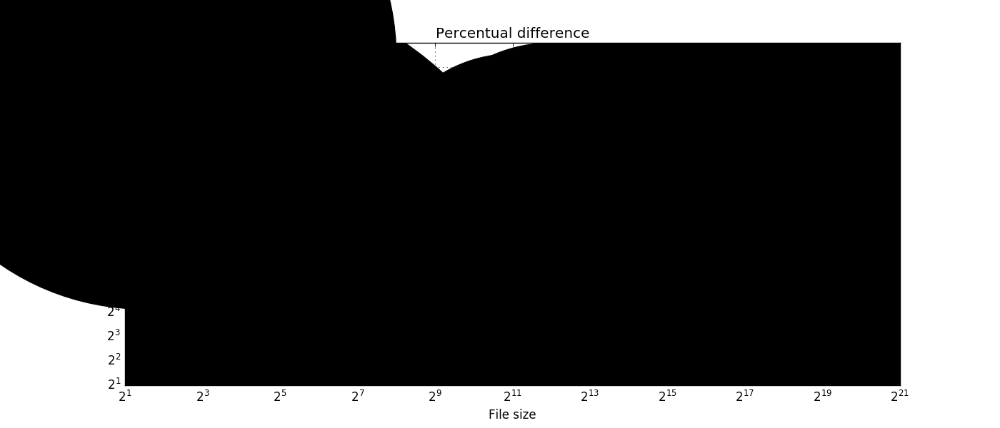
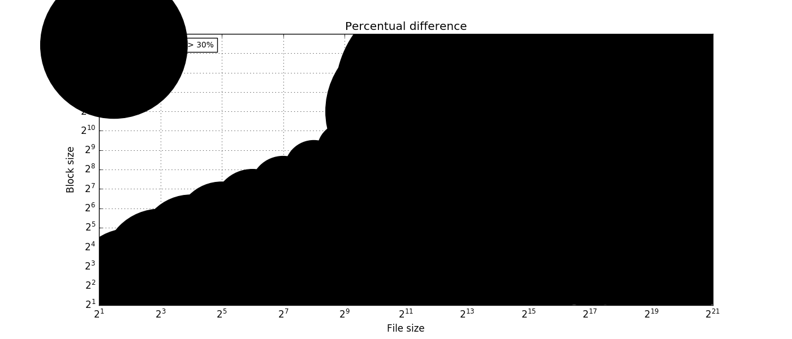

- Baseline data set
- ./gluster_block/fuse.1.iozone
- ./gluster_block/fuse.2.iozone
- ./gluster_block/fuse.3.iozone
- ./gluster_block/fuse.4.iozone
- ./gluster_block/fuse.5.iozone
- Investigated data set
- ./gluster_block/iscsi.1.iozone
- ./gluster_block/iscsi.2.iozone
- ./gluster_block/iscsi.3.iozone
- ./gluster_block/iscsi.4.iozone
- ./gluster_block/iscsi.5.iozone
Overall summary
| Operation |
Write |
Re-write |
Read |
Re-read |
Random read |
Random write |
Backwards read |
Record rewrite |
Strided Read |
Fwrite |
Frewrite |
Fread |
Freread |
ALL |
| baeline | first quartile |
37.33 |
37.37 |
39.7 |
3738.09 |
4008.14 |
37.29 |
12.87 |
33.4 |
31.67 |
37.65 |
37.67 |
39.35 |
3496.38 |
37.79 |
| median |
38.78 |
38.85 |
46.66 |
3899.63 |
4506.1 |
37.83 |
51.76 |
37.54 |
70.68 |
41.17 |
41.5 |
41.8 |
3784.62 |
53.9 |
| third quartile |
64.4 |
65.58 |
95.81 |
4316.85 |
4844.07 |
49.15 |
86.76 |
58.19 |
108.54 |
75.3 |
75.83 |
78.49 |
4014.43 |
504.17 |
| minimum |
9.41 |
10.5 |
4.13 |
1492.75 |
974.91 |
11.16 |
1.58 |
5.58 |
3.52 |
11.8 |
10.52 |
3.43 |
974.91 |
1.58 |
| maximum |
484.01 |
508.41 |
2686.85 |
7812.5 |
5748.68 |
594.87 |
110.87 |
659.52 |
1201.38 |
958.13 |
963.41 |
110.99 |
4506.1 |
7812.5 |
| mean val. |
74.47 |
76.3 |
144.88 |
4049.29 |
4390.86 |
75.99 |
51.37 |
83.74 |
135.3 |
102.33 |
99.01 |
55.05 |
3689.86 |
1002.19 |
| standard dev. |
90.09 |
92.2 |
402.78 |
656.22 |
788.06 |
106.53 |
37.35 |
123.28 |
214.81 |
158.92 |
151.37 |
28.4 |
531.46 |
1708.84 |
| ci. min. 90% |
68.96 |
70.66 |
120.25 |
4009.15 |
4342.65 |
69.48 |
49.08 |
76.2 |
122.16 |
92.61 |
89.75 |
53.32 |
3657.35 |
973.23 |
| ci. max. 90% |
79.98 |
81.94 |
169.52 |
4089.43 |
4439.06 |
82.51 |
53.65 |
91.28 |
148.44 |
112.05 |
108.27 |
56.79 |
3722.37 |
1031.14 |
| geom. mean |
52.57 |
53.69 |
63.88 |
4001.75 |
4295.01 |
49.04 |
30.27 |
48.42 |
63.33 |
61.33 |
60.98 |
46.9 |
3640.75 |
141.37 |
| set1 | first quartile |
1095.17 |
1825.51 |
4402.06 |
4517.66 |
4442.0 |
2498.92 |
3568.94 |
2768.65 |
3781.23 |
1971.62 |
1907.13 |
3788.13 |
4149.47 |
2362.01 |
| median |
1275.94 |
2391.81 |
4657.81 |
4750.07 |
4708.18 |
2889.52 |
4464.86 |
3882.76 |
4551.05 |
2343.25 |
2248.94 |
4519.74 |
4564.42 |
3608.17 |
| third quartile |
1332.11 |
2581.19 |
4860.28 |
5252.89 |
5463.46 |
3254.61 |
4587.1 |
4173.73 |
4971.91 |
2643.79 |
2407.16 |
4684.01 |
4975.74 |
4587.16 |
| minimum |
125.25 |
322.48 |
1860.61 |
2295.45 |
1043.47 |
549.69 |
357.68 |
499.42 |
484.65 |
391.91 |
322.48 |
169.25 |
974.91 |
125.25 |
| maximum |
2228.65 |
2681.82 |
7812.5 |
8395.92 |
6270.53 |
4317.09 |
4992.18 |
7828.63 |
6669.24 |
3597.47 |
4096.78 |
5097.21 |
5699.53 |
8395.92 |
| mean val. |
1151.72 |
2126.72 |
4576.12 |
4788.2 |
4758.79 |
2753.9 |
3968.67 |
3463.21 |
4357.88 |
2273.84 |
2146.06 |
4137.22 |
4469.28 |
3459.35 |
| standard dev. |
311.98 |
594.09 |
606.78 |
682.39 |
816.27 |
697.32 |
987.16 |
993.34 |
1050.11 |
570.93 |
593.96 |
868.76 |
775.85 |
1400.69 |
| ci. min. 90% |
1132.64 |
2090.38 |
4539.0 |
4746.46 |
4708.86 |
2711.24 |
3908.29 |
3402.45 |
4293.65 |
2238.91 |
2109.73 |
4084.08 |
4421.82 |
3435.62 |
| ci. max. 90% |
1170.8 |
2163.06 |
4613.23 |
4829.94 |
4808.72 |
2796.55 |
4029.06 |
3523.97 |
4422.11 |
2308.76 |
2182.39 |
4190.36 |
4516.74 |
3483.09 |
| geom. mean |
1084.16 |
2002.74 |
4533.19 |
4739.02 |
4676.5 |
2635.15 |
3747.88 |
3264.74 |
4158.72 |
2185.34 |
2038.94 |
3973.85 |
4381.93 |
3082.6 |
| linear regression slope 90% |
15.86 - 16.13 |
29.28 - 29.56 |
31.16 - 31.44 |
1.13 - 1.23 |
1.03 - 1.14 |
33.89 - 34.15 |
76.71 - 76.96 |
42.55 - 42.82 |
31.47 - 31.74 |
20.05 - 20.31 |
18.98 - 19.24 |
76.12 - 76.39 |
1.18 - 1.26 |
3.38 - 3.57 |
| ttest equality |
DIFF |
DIFF |
DIFF |
DIFF |
DIFF |
DIFF |
DIFF |
DIFF |
DIFF |
DIFF |
DIFF |
DIFF |
DIFF |
DIFF |
| baseline set1 difference |
1446.58 % |
2687.29 % |
3058.49 % |
18.25 % |
8.38 % |
3523.93 % |
7625.84 % |
4035.82 % |
3120.81 % |
2122.13 % |
2067.52 % |
7414.91 % |
21.12 % |
245.18 % |
| ttest p-value |
0.0 |
0.0 |
0.0 |
0.0 |
0.0 |
0.0 |
0.0 |
0.0 |
0.0 |
0.0 |
0.0 |
0.0 |
0.0 |
0.0 |
Write
| Write |
File size [kB] |
4 |
8 |
16 |
32 |
64 |
128 |
256 |
512 |
1024 |
2048 |
4096 |
8192 |
16384 |
32768 |
65536 |
131072 |
262144 |
524288 |
1048576 |
|---|
| baseline | first quartile |
10.3 |
12.19 |
16.03 |
25.92 |
35.81 |
59.01 |
68.97 |
81.59 |
121.81 |
66.01 |
46.29 |
39.61 |
38.34 |
37.78 |
37.49 |
37.38 |
37.31 |
37.28 |
37.01 |
| median |
10.42 |
18.01 |
22.54 |
38.94 |
58.69 |
95.85 |
123.87 |
163.72 |
210.57 |
69.22 |
47.44 |
39.99 |
38.45 |
37.8 |
37.52 |
37.39 |
37.32 |
37.29 |
37.27 |
| third quartile |
10.53 |
23.16 |
44.77 |
61.75 |
93.56 |
166.49 |
291.25 |
374.2 |
370.79 |
72.17 |
48.71 |
40.63 |
38.98 |
37.85 |
37.54 |
37.43 |
37.33 |
37.29 |
37.27 |
| mean val. |
10.27 |
17.77 |
29.15 |
46.02 |
76.14 |
128.04 |
178.78 |
215.86 |
240.63 |
67.43 |
47.27 |
40.37 |
38.66 |
37.83 |
37.02 |
37.19 |
36.92 |
37.03 |
36.94 |
| standard dev. |
0.5 |
5.85 |
15.89 |
27.24 |
50.32 |
90.93 |
130.87 |
149.8 |
144.3 |
7.1 |
1.74 |
1.11 |
0.44 |
0.11 |
1.83 |
0.62 |
1.8 |
0.91 |
1.38 |
| ci. min. 90% |
9.79 |
14.38 |
21.92 |
35.49 |
58.92 |
99.83 |
141.37 |
175.95 |
204.48 |
65.75 |
46.88 |
40.13 |
38.57 |
37.81 |
36.56 |
37.03 |
36.47 |
36.81 |
36.59 |
| ci. max. 90% |
10.75 |
21.17 |
36.38 |
56.55 |
93.35 |
156.25 |
216.18 |
255.77 |
276.77 |
69.12 |
47.66 |
40.61 |
38.75 |
37.86 |
37.48 |
37.34 |
37.37 |
37.26 |
37.28 |
| geom. mean |
10.26 |
16.86 |
25.48 |
38.79 |
62.3 |
101.0 |
135.62 |
162.75 |
189.7 |
67.01 |
47.24 |
40.35 |
38.66 |
37.83 |
36.97 |
37.18 |
36.87 |
37.02 |
36.91 |
| minimum |
9.41 |
10.67 |
13.33 |
16.09 |
26.27 |
34.75 |
42.37 |
44.48 |
36.56 |
48.58 |
42.97 |
38.72 |
38.04 |
37.64 |
28.03 |
35.4 |
28.67 |
31.31 |
27.96 |
| maximum |
10.7 |
25.04 |
61.03 |
90.84 |
181.19 |
326.29 |
465.45 |
465.95 |
484.01 |
74.7 |
49.78 |
42.63 |
39.8 |
38.1 |
37.8 |
37.51 |
37.4 |
37.3 |
37.28 |
| set1 | first quartile |
126.22 |
231.11 |
306.52 |
450.35 |
524.49 |
701.32 |
861.78 |
1022.19 |
1132.43 |
1173.1 |
1174.89 |
1214.56 |
1206.91 |
1264.37 |
1265.17 |
1262.65 |
1262.97 |
1271.01 |
1341.63 |
| median |
126.22 |
237.78 |
324.75 |
525.54 |
686.59 |
883.68 |
1046.69 |
1197.69 |
1288.65 |
1313.67 |
1343.17 |
1318.72 |
1277.15 |
1311.26 |
1307.72 |
1310.35 |
1310.03 |
1313.11 |
1384.32 |
| third quartile |
130.23 |
301.16 |
424.73 |
580.5 |
780.64 |
998.55 |
1154.44 |
1260.46 |
1343.98 |
1371.3 |
1372.28 |
1344.57 |
1322.42 |
1327.75 |
1323.9 |
1324.73 |
1328.11 |
1335.92 |
1563.05 |
| mean val. |
127.63 |
255.47 |
365.48 |
506.79 |
644.06 |
857.47 |
1001.72 |
1106.98 |
1193.28 |
1229.88 |
1243.41 |
1227.82 |
1208.3 |
1294.27 |
1293.5 |
1293.78 |
1295.32 |
1308.89 |
1497.18 |
| standard dev. |
2.41 |
47.39 |
71.25 |
107.64 |
142.92 |
196.92 |
201.35 |
213.8 |
215.79 |
206.64 |
196.74 |
183.65 |
171.87 |
39.61 |
39.1 |
38.89 |
40.22 |
47.77 |
242.23 |
| ci. min. 90% |
125.34 |
228.0 |
333.08 |
465.17 |
595.15 |
796.38 |
944.17 |
1050.03 |
1139.23 |
1180.88 |
1199.01 |
1188.2 |
1172.72 |
1284.34 |
1283.7 |
1284.04 |
1285.25 |
1296.93 |
1436.51 |
| ci. max. 90% |
129.93 |
282.94 |
397.88 |
548.41 |
692.96 |
918.56 |
1059.27 |
1163.94 |
1247.33 |
1278.87 |
1287.81 |
1267.44 |
1243.88 |
1304.19 |
1303.29 |
1303.52 |
1305.4 |
1320.86 |
1557.85 |
| geom. mean |
127.61 |
251.47 |
359.29 |
494.57 |
627.16 |
833.41 |
979.26 |
1082.76 |
1170.29 |
1209.08 |
1224.64 |
1211.28 |
1193.64 |
1293.66 |
1292.91 |
1293.2 |
1294.71 |
1308.04 |
1480.49 |
| minimum |
125.25 |
190.73 |
283.94 |
283.82 |
351.49 |
477.14 |
590.81 |
618.85 |
704.71 |
725.42 |
737.43 |
743.56 |
738.41 |
1216.78 |
1222.17 |
1219.6 |
1224.09 |
1228.76 |
1233.67 |
| maximum |
130.23 |
312.65 |
475.57 |
639.98 |
802.14 |
1168.18 |
1262.12 |
1340.2 |
1416.13 |
1416.32 |
1395.68 |
1362.85 |
1339.8 |
1339.53 |
1338.3 |
1339.93 |
1339.45 |
1412.04 |
2228.65 |
| ttest equality |
DIFF |
DIFF |
DIFF |
DIFF |
DIFF |
DIFF |
DIFF |
DIFF |
DIFF |
DIFF |
DIFF |
DIFF |
DIFF |
DIFF |
DIFF |
DIFF |
DIFF |
DIFF |
DIFF |
| baseline set1 difference |
1111.66 % |
1220.3 % |
1340.44 % |
1249.63 % |
1069.93 % |
821.93 % |
744.96 % |
631.54 % |
511.98 % |
1797.94 % |
2731.21 % |
3198.02 % |
3221.82 % |
3368.69 % |
3385.07 % |
3404.48 % |
3410.13 % |
3421.62 % |
3614.54 % |
| ttest p-value |
0.0 |
0.0 |
0.0 |
0.0 |
0.0 |
0.0 |
0.0 |
0.0 |
0.0 |
0.0 |
0.0 |
0.0 |
0.0 |
0.0 |
0.0 |
0.0 |
0.0 |
0.0 |
0.0 |
| Write |
Block size [kB] |
4 |
8 |
16 |
32 |
64 |
128 |
256 |
512 |
1024 |
2048 |
4096 |
8192 |
16384 |
|---|
| baseline | first quartile |
17.14 |
31.96 |
46.34 |
47.52 |
37.39 |
37.41 |
37.33 |
37.34 |
37.32 |
37.3 |
37.31 |
37.31 |
37.28 |
| median |
38.31 |
43.68 |
61.03 |
90.19 |
39.43 |
39.5 |
38.57 |
38.1 |
37.87 |
37.66 |
37.5 |
37.46 |
37.38 |
| third quartile |
44.83 |
66.16 |
84.13 |
119.21 |
167.2 |
285.59 |
73.11 |
54.3 |
43.91 |
40.34 |
39.1 |
38.16 |
37.79 |
| mean val. |
33.08 |
48.44 |
68.93 |
90.45 |
90.15 |
120.94 |
123.5 |
106.24 |
78.88 |
41.39 |
38.84 |
38.09 |
37.49 |
| standard dev. |
14.0 |
19.52 |
28.34 |
41.7 |
70.62 |
126.99 |
150.78 |
145.16 |
118.65 |
10.6 |
2.94 |
1.35 |
0.76 |
| ci. min. 90% |
30.18 |
44.23 |
62.53 |
80.56 |
76.56 |
95.63 |
92.28 |
74.92 |
52.11 |
38.88 |
38.1 |
37.73 |
37.28 |
| ci. max. 90% |
35.98 |
52.66 |
75.32 |
100.33 |
103.73 |
146.25 |
154.71 |
137.55 |
105.65 |
43.9 |
39.58 |
38.45 |
37.71 |
| geom. mean |
29.18 |
44.48 |
63.79 |
80.75 |
67.74 |
73.84 |
69.32 |
60.92 |
50.94 |
40.35 |
38.74 |
38.07 |
37.48 |
| minimum |
9.41 |
20.99 |
38.22 |
38.26 |
36.8 |
31.31 |
33.7 |
35.44 |
28.03 |
27.96 |
33.92 |
36.78 |
35.4 |
| maximum |
49.37 |
83.28 |
129.41 |
176.43 |
242.13 |
422.32 |
465.45 |
465.95 |
484.01 |
72.96 |
48.93 |
42.63 |
39.39 |
| set1 | first quartile |
351.49 |
502.59 |
730.62 |
1000.92 |
1246.73 |
1286.16 |
1305.02 |
1324.81 |
1333.69 |
1334.35 |
1320.39 |
1239.98 |
1222.21 |
| median |
618.85 |
869.25 |
1095.17 |
1217.88 |
1267.36 |
1296.49 |
1311.48 |
1330.4 |
1338.3 |
1337.44 |
1324.36 |
1244.76 |
1225.03 |
| third quartile |
736.63 |
960.85 |
1141.22 |
1260.74 |
1306.73 |
1326.34 |
1339.17 |
1368.42 |
1373.92 |
1361.24 |
1332.67 |
1261.83 |
1229.62 |
| mean val. |
537.28 |
744.38 |
938.87 |
1104.38 |
1222.26 |
1287.48 |
1325.93 |
1355.96 |
1354.88 |
1359.4 |
1368.66 |
1272.4 |
1264.08 |
| standard dev. |
216.91 |
255.3 |
256.44 |
225.74 |
168.72 |
89.66 |
128.87 |
89.4 |
41.97 |
60.68 |
164.82 |
106.11 |
138.48 |
| ci. min. 90% |
492.37 |
689.3 |
881.01 |
1050.86 |
1189.81 |
1269.61 |
1299.25 |
1336.68 |
1345.41 |
1345.01 |
1327.38 |
1244.13 |
1224.5 |
| ci. max. 90% |
582.18 |
799.45 |
996.74 |
1157.9 |
1254.71 |
1305.35 |
1352.6 |
1375.25 |
1364.35 |
1373.79 |
1409.94 |
1300.66 |
1303.66 |
| geom. mean |
476.76 |
689.31 |
895.71 |
1076.67 |
1208.4 |
1284.32 |
1321.12 |
1353.63 |
1354.28 |
1358.18 |
1361.26 |
1269.03 |
1258.33 |
| minimum |
125.25 |
229.46 |
324.75 |
577.9 |
638.12 |
1046.69 |
1162.75 |
1272.69 |
1288.65 |
1314.95 |
1310.24 |
1234.03 |
1192.35 |
| maximum |
752.8 |
1003.08 |
1188.93 |
1319.04 |
1544.73 |
1563.05 |
2188.64 |
1986.89 |
1576.01 |
1607.84 |
2228.65 |
1901.69 |
1974.33 |
| ttest equality |
DIFF |
DIFF |
DIFF |
DIFF |
DIFF |
DIFF |
DIFF |
DIFF |
DIFF |
DIFF |
DIFF |
DIFF |
DIFF |
| baseline set1 difference |
1515.51 % |
1889.88 % |
1694.45 % |
1250.31 % |
3114.38 % |
3182.58 % |
3300.14 % |
3392.26 % |
3433.82 % |
3451.14 % |
3431.72 % |
3223.0 % |
3177.66 % |
| ttest p-value |
0.0 |
0.0 |
0.0 |
0.0 |
0.0 |
0.0 |
0.0 |
0.0 |
0.0 |
0.0 |
0.0 |
0.0 |
0.0 |
| Regression line |
|---|
| slope | 15.99532 |
| std. error | 0.08348 |
| ci. max 90% | 15.85713 |
| ci. min. 90% | 16.13351 |
 Back on top
Back on top
Re-write
| Re-write |
File size [kB] |
4 |
8 |
16 |
32 |
64 |
128 |
256 |
512 |
1024 |
2048 |
4096 |
8192 |
16384 |
32768 |
65536 |
131072 |
262144 |
524288 |
1048576 |
|---|
| baseline | first quartile |
10.97 |
16.64 |
19.14 |
30.47 |
37.74 |
63.51 |
77.48 |
88.62 |
99.61 |
65.93 |
46.59 |
39.59 |
38.4 |
37.77 |
37.52 |
37.37 |
37.32 |
37.28 |
37.0 |
| median |
11.06 |
19.71 |
29.54 |
44.21 |
67.41 |
105.3 |
120.65 |
174.8 |
216.04 |
70.8 |
47.71 |
39.96 |
38.55 |
37.8 |
37.53 |
37.39 |
37.32 |
37.28 |
37.27 |
| third quartile |
13.38 |
23.19 |
41.18 |
68.25 |
131.81 |
194.44 |
299.58 |
393.79 |
366.96 |
72.16 |
48.59 |
40.82 |
38.93 |
37.83 |
37.54 |
37.4 |
37.34 |
37.29 |
37.27 |
| mean val. |
12.33 |
20.0 |
31.97 |
50.5 |
91.68 |
133.78 |
182.47 |
225.02 |
242.58 |
67.65 |
47.21 |
40.26 |
38.67 |
37.82 |
37.55 |
37.09 |
37.2 |
36.87 |
36.79 |
| standard dev. |
2.21 |
4.46 |
16.72 |
26.15 |
68.36 |
92.83 |
128.06 |
151.75 |
147.73 |
8.05 |
2.17 |
1.26 |
0.37 |
0.1 |
0.08 |
1.0 |
0.61 |
1.5 |
1.36 |
| ci. min. 90% |
10.22 |
17.41 |
24.37 |
40.38 |
68.29 |
104.99 |
145.87 |
184.59 |
205.58 |
65.74 |
46.72 |
39.99 |
38.59 |
37.8 |
37.53 |
36.84 |
37.05 |
36.49 |
36.45 |
| ci. max. 90% |
14.44 |
22.58 |
39.58 |
60.61 |
115.07 |
162.58 |
219.07 |
265.44 |
279.58 |
69.56 |
47.7 |
40.54 |
38.74 |
37.85 |
37.57 |
37.34 |
37.35 |
37.24 |
37.13 |
| geom. mean |
12.18 |
19.54 |
28.57 |
44.19 |
71.76 |
105.74 |
140.61 |
172.28 |
189.18 |
67.08 |
47.15 |
40.24 |
38.67 |
37.82 |
37.55 |
37.08 |
37.19 |
36.84 |
36.77 |
| minimum |
10.5 |
13.26 |
14.09 |
15.8 |
28.21 |
29.18 |
43.42 |
44.88 |
36.98 |
36.76 |
36.5 |
35.12 |
38.03 |
37.64 |
37.46 |
31.68 |
33.46 |
29.94 |
30.48 |
| maximum |
15.74 |
27.02 |
78.6 |
112.82 |
294.94 |
348.18 |
415.14 |
488.3 |
508.41 |
77.65 |
49.67 |
42.6 |
39.73 |
38.17 |
37.85 |
37.53 |
37.39 |
37.32 |
37.29 |
| set1 | first quartile |
322.48 |
462.79 |
613.81 |
825.74 |
1116.43 |
1214.91 |
1369.03 |
1575.48 |
1661.24 |
1883.32 |
2036.75 |
2187.4 |
2221.28 |
2420.4 |
2430.78 |
2434.9 |
2427.9 |
2437.1 |
2442.68 |
| median |
328.96 |
510.01 |
782.0 |
1005.9 |
1331.99 |
1586.46 |
1853.24 |
2095.47 |
2179.08 |
2361.2 |
2457.19 |
2497.75 |
2455.43 |
2543.5 |
2553.66 |
2549.8 |
2554.66 |
2557.77 |
2561.07 |
| third quartile |
328.96 |
587.73 |
973.76 |
1169.86 |
1525.82 |
1867.08 |
2092.61 |
2288.12 |
2511.85 |
2568.43 |
2617.02 |
2616.18 |
2599.93 |
2598.46 |
2589.93 |
2586.43 |
2590.1 |
2592.16 |
2602.8 |
| mean val. |
330.58 |
519.62 |
787.66 |
1040.22 |
1279.56 |
1523.32 |
1732.26 |
1924.3 |
2055.72 |
2175.63 |
2273.54 |
2311.61 |
2293.64 |
2486.42 |
2488.83 |
2488.44 |
2490.98 |
2495.37 |
2505.47 |
| standard dev. |
11.35 |
70.24 |
158.06 |
228.43 |
306.2 |
396.32 |
440.72 |
497.14 |
491.78 |
475.29 |
458.8 |
442.95 |
422.18 |
137.45 |
139.29 |
138.68 |
139.07 |
141.0 |
135.99 |
| ci. min. 90% |
319.77 |
478.91 |
715.78 |
951.89 |
1174.78 |
1400.38 |
1606.29 |
1791.86 |
1932.54 |
2062.94 |
2170.01 |
2216.05 |
2206.25 |
2451.99 |
2453.94 |
2453.7 |
2456.14 |
2460.06 |
2471.41 |
| ci. max. 90% |
341.4 |
560.33 |
859.54 |
1128.54 |
1384.33 |
1646.26 |
1858.22 |
2056.74 |
2178.89 |
2288.32 |
2377.08 |
2407.17 |
2381.04 |
2520.85 |
2523.71 |
2523.18 |
2525.81 |
2530.69 |
2539.53 |
| geom. mean |
330.43 |
515.36 |
772.71 |
1015.99 |
1241.7 |
1468.03 |
1669.42 |
1850.73 |
1988.72 |
2114.47 |
2215.96 |
2258.07 |
2245.1 |
2482.57 |
2484.86 |
2484.51 |
2487.03 |
2491.32 |
2501.72 |
| minimum |
322.48 |
432.26 |
596.84 |
741.33 |
790.05 |
839.12 |
786.15 |
904.41 |
995.14 |
1160.76 |
1143.19 |
1166.35 |
1184.4 |
2201.13 |
2206.81 |
2217.52 |
2220.82 |
2225.07 |
2229.18 |
| maximum |
350.04 |
609.01 |
980.99 |
1412.33 |
1738.29 |
2049.55 |
2295.45 |
2576.97 |
2644.9 |
2670.0 |
2675.45 |
2681.82 |
2671.55 |
2622.32 |
2617.18 |
2611.76 |
2621.02 |
2621.1 |
2632.0 |
| ttest equality |
DIFF |
DIFF |
DIFF |
DIFF |
DIFF |
DIFF |
DIFF |
DIFF |
DIFF |
DIFF |
DIFF |
DIFF |
DIFF |
DIFF |
DIFF |
DIFF |
DIFF |
DIFF |
DIFF |
| baseline set1 difference |
2873.37 % |
2488.0 % |
2547.6 % |
2175.49 % |
1875.98 % |
1406.54 % |
1436.01 % |
1098.76 % |
908.66 % |
3235.04 % |
5050.48 % |
6150.25 % |
6269.82 % |
6629.23 % |
6705.16 % |
6720.08 % |
6744.69 % |
6760.21 % |
6772.11 % |
| ttest p-value |
0.0 |
0.0 |
0.0 |
0.0 |
0.0 |
0.0 |
0.0 |
0.0 |
0.0 |
0.0 |
0.0 |
0.0 |
0.0 |
0.0 |
0.0 |
0.0 |
0.0 |
0.0 |
0.0 |
| Re-write |
Block size [kB] |
4 |
8 |
16 |
32 |
64 |
128 |
256 |
512 |
1024 |
2048 |
4096 |
8192 |
16384 |
|---|
| baseline | first quartile |
19.41 |
37.61 |
44.57 |
48.15 |
37.41 |
37.39 |
37.39 |
37.36 |
37.35 |
37.32 |
37.32 |
37.3 |
37.28 |
| median |
38.36 |
47.34 |
65.58 |
88.21 |
39.65 |
39.35 |
38.56 |
38.08 |
37.81 |
37.72 |
37.54 |
37.49 |
37.38 |
| third quartile |
45.87 |
67.85 |
92.68 |
130.19 |
188.31 |
287.89 |
73.48 |
54.21 |
44.72 |
39.8 |
38.8 |
38.11 |
37.79 |
| mean val. |
34.23 |
51.28 |
71.08 |
95.14 |
95.62 |
123.69 |
123.02 |
106.48 |
81.11 |
41.98 |
38.96 |
37.81 |
37.41 |
| standard dev. |
12.91 |
19.22 |
29.19 |
45.3 |
78.78 |
131.25 |
150.21 |
145.47 |
124.78 |
10.47 |
3.03 |
1.57 |
1.36 |
| ci. min. 90% |
31.55 |
47.13 |
64.49 |
84.4 |
80.47 |
97.54 |
91.92 |
75.1 |
52.95 |
39.5 |
38.2 |
37.39 |
37.02 |
| ci. max. 90% |
36.9 |
55.42 |
77.66 |
105.88 |
110.78 |
149.85 |
154.11 |
137.86 |
109.27 |
44.47 |
39.72 |
38.23 |
37.8 |
| geom. mean |
31.14 |
47.62 |
65.56 |
83.98 |
69.63 |
74.41 |
68.98 |
60.98 |
51.53 |
41.04 |
38.86 |
37.78 |
37.38 |
| minimum |
10.5 |
21.57 |
38.21 |
38.45 |
35.5 |
35.34 |
29.94 |
31.68 |
36.74 |
33.46 |
36.76 |
32.22 |
30.48 |
| maximum |
50.6 |
83.82 |
135.35 |
189.14 |
294.94 |
393.4 |
488.3 |
473.1 |
508.41 |
74.44 |
49.67 |
42.47 |
39.35 |
| set1 | first quartile |
741.33 |
1075.4 |
1418.48 |
1697.85 |
2117.72 |
2343.94 |
2418.3 |
2582.36 |
2607.8 |
2608.7 |
2566.36 |
2278.38 |
2220.47 |
| median |
995.14 |
1318.06 |
1647.53 |
2026.75 |
2427.9 |
2525.45 |
2549.7 |
2590.02 |
2616.54 |
2619.53 |
2587.48 |
2284.66 |
2225.07 |
| third quartile |
1181.36 |
1608.19 |
1988.58 |
2247.93 |
2443.97 |
2546.81 |
2559.8 |
2605.55 |
2636.53 |
2631.38 |
2601.95 |
2316.36 |
2229.56 |
| mean val. |
906.79 |
1283.52 |
1619.36 |
1929.06 |
2276.35 |
2434.44 |
2493.62 |
2590.86 |
2619.32 |
2617.91 |
2586.93 |
2311.03 |
2226.2 |
| standard dev. |
292.62 |
351.86 |
344.68 |
353.94 |
255.07 |
169.15 |
116.69 |
35.91 |
29.65 |
41.29 |
28.82 |
54.8 |
31.9 |
| ci. min. 90% |
846.22 |
1207.61 |
1541.58 |
1845.14 |
2227.29 |
2400.73 |
2469.46 |
2583.12 |
2612.63 |
2608.12 |
2579.71 |
2296.43 |
2217.09 |
| ci. max. 90% |
967.37 |
1359.43 |
1697.14 |
2012.98 |
2325.41 |
2468.14 |
2517.77 |
2598.61 |
2626.01 |
2627.7 |
2594.15 |
2325.63 |
2235.32 |
| geom. mean |
847.3 |
1226.49 |
1579.81 |
1891.18 |
2260.17 |
2428.26 |
2490.75 |
2590.61 |
2619.15 |
2617.57 |
2586.77 |
2310.42 |
2225.99 |
| minimum |
322.48 |
557.22 |
966.53 |
846.69 |
1331.99 |
2018.0 |
1998.03 |
2380.95 |
2533.09 |
2366.72 |
2529.6 |
2264.76 |
2129.91 |
| maximum |
1223.22 |
1725.62 |
2043.06 |
2312.25 |
2476.78 |
2632.0 |
2605.8 |
2641.08 |
2681.82 |
2674.55 |
2664.82 |
2470.72 |
2378.49 |
| ttest equality |
DIFF |
DIFF |
DIFF |
DIFF |
DIFF |
DIFF |
DIFF |
DIFF |
DIFF |
DIFF |
DIFF |
DIFF |
DIFF |
| baseline set1 difference |
2494.38 % |
2684.45 % |
2412.44 % |
2197.71 % |
6022.96 % |
6317.91 % |
6513.03 % |
6702.11 % |
6819.4 % |
6845.0 % |
6792.4 % |
5993.55 % |
5853.37 % |
| ttest p-value |
0.0 |
0.0 |
0.0 |
0.0 |
0.0 |
0.0 |
0.0 |
0.0 |
0.0 |
0.0 |
0.0 |
0.0 |
0.0 |
| Regression line |
|---|
| slope | 29.42183 |
| std. error | 0.08433 |
| ci. max 90% | 29.28223 |
| ci. min. 90% | 29.56144 |
Back on top
Read
| Read |
File size [kB] |
4 |
8 |
16 |
32 |
64 |
128 |
256 |
512 |
1024 |
2048 |
4096 |
8192 |
16384 |
32768 |
65536 |
131072 |
262144 |
524288 |
1048576 |
|---|
| baseline | first quartile |
6.35 |
12.55 |
25.24 |
14.63 |
25.59 |
26.65 |
41.0 |
48.49 |
43.87 |
41.0 |
40.32 |
39.74 |
39.77 |
40.03 |
39.74 |
39.69 |
39.68 |
39.62 |
39.7 |
| median |
6.69 |
13.14 |
26.26 |
30.96 |
26.67 |
43.4 |
61.1 |
65.43 |
48.04 |
43.21 |
41.2 |
40.51 |
40.24 |
67.39 |
66.48 |
66.01 |
65.75 |
65.67 |
65.61 |
| third quartile |
6.72 |
13.59 |
27.27 |
53.23 |
103.66 |
202.13 |
214.74 |
114.93 |
59.46 |
63.88 |
84.67 |
82.55 |
93.63 |
107.94 |
101.1 |
97.99 |
96.49 |
95.75 |
95.41 |
| mean val. |
6.61 |
12.32 |
24.67 |
33.73 |
56.69 |
93.94 |
128.41 |
153.01 |
180.95 |
239.23 |
283.15 |
272.91 |
263.02 |
85.82 |
75.13 |
71.58 |
70.06 |
69.33 |
68.98 |
| standard dev. |
0.31 |
2.96 |
6.94 |
20.12 |
40.55 |
86.01 |
131.94 |
230.43 |
358.92 |
563.94 |
719.77 |
703.65 |
683.59 |
54.28 |
36.22 |
31.11 |
29.08 |
28.2 |
27.76 |
| ci. min. 90% |
6.31 |
10.61 |
21.52 |
25.95 |
42.81 |
67.26 |
90.7 |
91.62 |
91.05 |
105.52 |
120.72 |
121.11 |
121.51 |
72.23 |
66.06 |
63.79 |
62.78 |
62.27 |
62.02 |
| ci. max. 90% |
6.9 |
14.04 |
27.82 |
41.51 |
70.56 |
120.62 |
166.13 |
214.4 |
270.85 |
372.95 |
445.57 |
424.71 |
404.53 |
99.42 |
84.21 |
79.37 |
77.34 |
76.39 |
75.93 |
| geom. mean |
6.6 |
11.77 |
23.18 |
27.47 |
43.35 |
61.67 |
85.0 |
85.57 |
74.16 |
71.61 |
73.37 |
74.57 |
76.6 |
72.2 |
67.05 |
65.04 |
64.14 |
63.67 |
63.44 |
| minimum |
6.26 |
4.13 |
8.26 |
12.37 |
15.16 |
22.25 |
37.38 |
38.98 |
36.73 |
39.22 |
38.74 |
38.02 |
38.96 |
39.57 |
39.26 |
39.34 |
39.44 |
39.3 |
39.29 |
| maximum |
7.03 |
14.6 |
31.69 |
58.62 |
109.46 |
232.73 |
457.73 |
834.92 |
1223.97 |
2005.98 |
2628.09 |
2662.25 |
2686.85 |
207.69 |
141.28 |
121.84 |
113.97 |
110.42 |
108.72 |
| set1 | first quartile |
1860.61 |
3721.23 |
3899.63 |
3965.86 |
4108.47 |
4167.44 |
4543.11 |
4662.42 |
4651.01 |
4734.51 |
4700.42 |
4730.1 |
4551.97 |
4334.94 |
4347.85 |
4359.85 |
4366.74 |
4397.22 |
4408.75 |
| median |
2098.98 |
4197.96 |
5117.72 |
4397.55 |
4457.8 |
4711.2 |
4792.27 |
4879.41 |
4878.2 |
4866.33 |
4818.54 |
4821.87 |
4697.59 |
4546.7 |
4539.3 |
4513.39 |
4509.72 |
4511.81 |
4511.79 |
| third quartile |
2098.98 |
6818.58 |
5117.72 |
4682.46 |
4872.05 |
5002.48 |
5261.97 |
5155.17 |
5048.48 |
5069.26 |
4968.37 |
4899.85 |
4836.74 |
4606.94 |
4563.92 |
4542.87 |
4545.94 |
4546.58 |
4538.0 |
| mean val. |
2365.09 |
5138.06 |
4602.44 |
4525.34 |
4548.7 |
4706.53 |
4815.39 |
4858.46 |
4823.69 |
4879.99 |
4818.12 |
4722.5 |
4533.64 |
4362.66 |
4349.71 |
4337.46 |
4337.91 |
4339.23 |
4340.72 |
| standard dev. |
869.74 |
1954.93 |
793.53 |
974.22 |
598.08 |
682.53 |
643.61 |
533.88 |
455.95 |
381.74 |
310.43 |
298.5 |
444.41 |
471.17 |
464.52 |
453.29 |
452.51 |
456.29 |
458.72 |
| ci. min. 90% |
1535.88 |
4004.83 |
4241.57 |
4148.66 |
4344.05 |
4494.8 |
4631.43 |
4716.23 |
4709.48 |
4789.48 |
4748.07 |
4658.1 |
4441.64 |
4244.64 |
4233.36 |
4223.92 |
4224.57 |
4224.94 |
4225.82 |
| ci. max. 90% |
3194.29 |
6271.3 |
4963.32 |
4902.02 |
4753.35 |
4918.27 |
4999.35 |
5000.68 |
4937.89 |
4970.5 |
4888.17 |
4786.9 |
4625.64 |
4480.67 |
4466.06 |
4451.0 |
4451.26 |
4453.52 |
4455.62 |
| geom. mean |
2264.74 |
4807.45 |
4535.67 |
4441.18 |
4510.87 |
4659.13 |
4771.99 |
4827.93 |
4801.53 |
4865.14 |
4807.94 |
4712.58 |
4510.05 |
4335.67 |
4323.2 |
4312.25 |
4312.78 |
4313.67 |
4314.88 |
| minimum |
1860.61 |
2558.86 |
3149.91 |
3466.99 |
3504.33 |
3571.3 |
3341.48 |
3288.07 |
3413.32 |
3983.56 |
4020.61 |
3976.21 |
3369.8 |
3409.67 |
3433.3 |
3443.34 |
3452.04 |
3453.09 |
3455.6 |
| maximum |
3906.25 |
7812.5 |
5551.22 |
7799.26 |
5722.96 |
6255.99 |
5831.72 |
5748.68 |
5778.82 |
5711.18 |
5470.58 |
5085.7 |
5015.68 |
4865.46 |
4860.25 |
4821.31 |
4837.22 |
4825.22 |
4831.72 |
| ttest equality |
DIFF |
DIFF |
DIFF |
DIFF |
DIFF |
DIFF |
DIFF |
DIFF |
DIFF |
DIFF |
DIFF |
DIFF |
DIFF |
DIFF |
DIFF |
DIFF |
DIFF |
DIFF |
DIFF |
| baseline set1 difference |
31286.61 % |
31849.99 % |
19390.28 % |
14103.76 % |
16612.87 % |
10754.47 % |
7743.87 % |
7357.2 % |
10053.62 % |
11162.95 % |
11595.43 % |
11802.83 % |
11573.3 % |
6646.49 % |
6727.93 % |
6737.86 % |
6758.9 % |
6769.92 % |
6776.44 % |
| ttest p-value |
0.0003 |
0.0 |
0.0 |
0.0 |
0.0 |
0.0 |
0.0 |
0.0 |
0.0 |
0.0 |
0.0 |
0.0 |
0.0 |
0.0 |
0.0 |
0.0 |
0.0 |
0.0 |
0.0 |
| Read |
Block size [kB] |
4 |
8 |
16 |
32 |
64 |
128 |
256 |
512 |
1024 |
2048 |
4096 |
8192 |
16384 |
|---|
| baseline | first quartile |
22.25 |
23.95 |
39.66 |
40.66 |
39.56 |
39.67 |
39.71 |
46.54 |
65.81 |
83.17 |
96.49 |
105.51 |
110.42 |
| median |
38.02 |
39.03 |
40.7 |
44.18 |
40.03 |
40.03 |
40.24 |
47.57 |
67.39 |
86.35 |
101.04 |
113.05 |
121.79 |
| third quartile |
39.57 |
39.65 |
44.38 |
53.62 |
65.43 |
52.24 |
46.94 |
56.45 |
84.67 |
107.94 |
124.91 |
150.93 |
207.31 |
| mean val. |
30.07 |
31.68 |
41.29 |
52.11 |
61.42 |
69.23 |
77.4 |
113.29 |
175.27 |
277.39 |
381.9 |
431.98 |
487.24 |
| standard dev. |
12.69 |
11.74 |
9.05 |
19.02 |
45.89 |
61.07 |
100.45 |
194.64 |
321.95 |
551.02 |
770.65 |
823.95 |
878.82 |
| ci. min. 90% |
27.44 |
29.15 |
39.24 |
47.6 |
52.6 |
57.06 |
56.6 |
71.29 |
102.61 |
146.74 |
188.88 |
212.48 |
236.06 |
| ci. max. 90% |
32.7 |
34.21 |
43.33 |
56.62 |
70.25 |
81.4 |
98.19 |
155.28 |
247.92 |
408.04 |
574.93 |
651.49 |
738.42 |
| geom. mean |
26.15 |
28.83 |
40.27 |
49.7 |
52.61 |
54.84 |
54.65 |
66.38 |
94.24 |
126.77 |
155.89 |
178.09 |
199.83 |
| minimum |
4.13 |
8.26 |
24.73 |
38.96 |
39.26 |
39.29 |
39.39 |
46.3 |
65.45 |
82.66 |
95.3 |
103.49 |
108.7 |
| maximum |
51.87 |
53.65 |
68.77 |
108.33 |
221.99 |
232.73 |
457.73 |
834.92 |
1223.97 |
2005.98 |
2628.09 |
2662.25 |
2686.85 |
| set1 | first quartile |
3650.74 |
4524.58 |
4495.38 |
4634.52 |
4806.53 |
4721.35 |
4498.45 |
4518.9 |
4539.24 |
4524.01 |
4401.65 |
3581.83 |
3454.37 |
| median |
3935.34 |
4871.95 |
4714.76 |
4802.58 |
4835.74 |
4773.79 |
4582.12 |
4611.4 |
4606.31 |
4561.33 |
4444.88 |
3611.56 |
3468.08 |
| third quartile |
4103.21 |
4973.08 |
4834.14 |
4993.95 |
5000.16 |
4926.34 |
4804.61 |
4808.79 |
4866.12 |
4874.4 |
4663.31 |
3719.05 |
3475.96 |
| mean val. |
3769.18 |
4899.66 |
4687.71 |
4870.69 |
4920.06 |
4896.78 |
4724.07 |
4744.43 |
4762.61 |
4738.5 |
4585.66 |
3683.02 |
3465.62 |
| standard dev. |
554.65 |
745.62 |
302.71 |
498.57 |
229.77 |
377.66 |
342.8 |
337.57 |
325.45 |
372.74 |
310.98 |
161.87 |
26.59 |
| ci. min. 90% |
3654.36 |
4738.8 |
4619.4 |
4752.48 |
4875.87 |
4821.52 |
4653.11 |
4671.6 |
4689.17 |
4650.12 |
4507.77 |
3639.9 |
3458.02 |
| ci. max. 90% |
3884.0 |
5060.52 |
4756.02 |
4988.9 |
4964.25 |
4972.03 |
4795.03 |
4817.25 |
4836.05 |
4826.87 |
4663.56 |
3726.14 |
3473.22 |
| geom. mean |
3715.4 |
4853.1 |
4678.21 |
4850.5 |
4914.89 |
4882.41 |
4712.79 |
4733.54 |
4752.4 |
4724.69 |
4576.01 |
3679.68 |
3465.52 |
| minimum |
1860.61 |
3899.63 |
4039.02 |
4304.3 |
4154.88 |
3341.48 |
4394.69 |
4495.34 |
4502.3 |
3757.73 |
4308.31 |
3433.3 |
3369.8 |
| maximum |
4211.56 |
7812.5 |
5551.22 |
7799.26 |
5722.96 |
6255.99 |
5831.72 |
5748.68 |
5778.82 |
5711.18 |
5470.58 |
4104.62 |
3511.2 |
| ttest equality |
DIFF |
DIFF |
DIFF |
DIFF |
DIFF |
DIFF |
DIFF |
DIFF |
DIFF |
DIFF |
DIFF |
DIFF |
DIFF |
| baseline set1 difference |
10251.36 % |
12381.25 % |
11483.01 % |
10770.19 % |
11981.1 % |
11825.44 % |
11286.36 % |
9593.47 % |
6734.94 % |
5182.57 % |
4298.96 % |
3094.71 % |
2747.5 % |
| ttest p-value |
0.0 |
0.0 |
0.0 |
0.0 |
0.0 |
0.0 |
0.0 |
0.0 |
0.0 |
0.0 |
0.0 |
0.0 |
0.0 |
| Regression line |
|---|
| slope | 31.3007 |
| std. error | 0.08319 |
| ci. max 90% | 31.16297 |
| ci. min. 90% | 31.43843 |

Back on top
Re-read
| Re-read |
File size [kB] |
4 |
8 |
16 |
32 |
64 |
128 |
256 |
512 |
1024 |
2048 |
4096 |
8192 |
16384 |
32768 |
65536 |
131072 |
262144 |
524288 |
1048576 |
|---|
| baseline | first quartile |
3906.25 |
4495.56 |
3899.63 |
3466.99 |
3923.98 |
4015.86 |
4036.0 |
3994.22 |
4033.74 |
4053.99 |
4327.19 |
4013.07 |
3563.59 |
3625.66 |
3671.62 |
3682.4 |
3678.54 |
3694.98 |
3718.55 |
| median |
3906.25 |
6818.58 |
3899.63 |
4196.48 |
4457.8 |
4167.44 |
4164.23 |
4290.43 |
4369.95 |
4434.18 |
4469.39 |
4105.62 |
3722.73 |
3722.71 |
3733.93 |
3758.84 |
3777.31 |
3793.35 |
3799.8 |
| third quartile |
3906.25 |
7812.5 |
5117.72 |
4397.55 |
4783.15 |
4775.85 |
4770.48 |
4868.05 |
4697.89 |
4692.13 |
4613.83 |
4187.6 |
3816.73 |
3811.83 |
3790.13 |
3792.59 |
3805.67 |
3807.79 |
3825.93 |
| mean val. |
3806.86 |
6286.94 |
4599.65 |
3916.27 |
4291.19 |
4313.09 |
4359.03 |
4449.47 |
4467.44 |
4493.62 |
4496.26 |
4081.25 |
3673.49 |
3628.68 |
3618.66 |
3622.34 |
3647.55 |
3653.47 |
3665.6 |
| standard dev. |
222.25 |
1822.88 |
1038.82 |
716.37 |
508.75 |
673.04 |
534.9 |
580.46 |
527.13 |
498.55 |
388.28 |
193.29 |
182.66 |
250.02 |
299.11 |
331.3 |
322.1 |
327.48 |
334.36 |
| ci. min. 90% |
3594.97 |
5230.25 |
4127.23 |
3639.28 |
4117.11 |
4104.3 |
4206.15 |
4294.83 |
4335.4 |
4375.41 |
4408.64 |
4039.55 |
3635.67 |
3566.06 |
3543.74 |
3539.35 |
3566.87 |
3571.45 |
3581.85 |
| ci. max. 90% |
4018.75 |
7343.63 |
5072.07 |
4193.25 |
4465.27 |
4521.88 |
4511.92 |
4604.11 |
4599.47 |
4611.83 |
4583.88 |
4122.95 |
3711.3 |
3691.3 |
3693.58 |
3705.32 |
3728.23 |
3735.5 |
3749.35 |
| geom. mean |
3801.38 |
6003.85 |
4506.05 |
3825.63 |
4262.17 |
4264.0 |
4328.66 |
4414.27 |
4438.46 |
4467.65 |
4480.07 |
4076.57 |
3668.88 |
3619.77 |
3605.74 |
3606.29 |
3632.58 |
3637.99 |
3649.49 |
| minimum |
3409.29 |
3721.23 |
3899.63 |
1492.75 |
3458.1 |
3200.67 |
3668.84 |
3759.65 |
3817.15 |
3710.45 |
3738.4 |
3552.69 |
3230.46 |
2998.22 |
3021.84 |
2919.18 |
2998.89 |
3006.58 |
2990.79 |
| maximum |
3906.25 |
7812.5 |
7442.46 |
4550.21 |
5263.33 |
5710.84 |
5438.51 |
5625.32 |
5684.83 |
5634.45 |
5412.34 |
4426.82 |
3935.13 |
3915.7 |
3960.4 |
3969.5 |
3980.16 |
3992.61 |
4003.71 |
| set1 | first quartile |
3906.25 |
4197.96 |
4022.99 |
4550.21 |
4457.8 |
4647.71 |
4623.23 |
4726.02 |
4906.73 |
4981.95 |
5079.79 |
5052.01 |
4544.27 |
4364.55 |
4417.76 |
4412.27 |
4400.21 |
4439.21 |
4443.27 |
| median |
3906.25 |
6818.58 |
5117.72 |
5079.19 |
4872.05 |
4818.57 |
4997.84 |
5001.49 |
5263.9 |
5470.94 |
5479.52 |
5228.74 |
4690.69 |
4564.17 |
4550.62 |
4535.92 |
4538.93 |
4545.13 |
4539.1 |
| third quartile |
3906.25 |
6818.58 |
5334.47 |
5079.19 |
5159.74 |
5649.31 |
5673.94 |
5686.33 |
5654.18 |
5676.4 |
5629.43 |
5434.09 |
4800.41 |
4649.23 |
4604.63 |
4587.16 |
4580.09 |
4573.27 |
4588.82 |
| mean val. |
3806.86 |
5873.77 |
5159.47 |
4795.21 |
4768.81 |
4969.12 |
5007.96 |
5117.95 |
5157.2 |
5280.02 |
5330.19 |
5136.24 |
4521.15 |
4378.94 |
4372.38 |
4367.89 |
4370.58 |
4368.55 |
4381.74 |
| standard dev. |
222.25 |
1698.74 |
1292.26 |
426.77 |
707.11 |
560.23 |
755.2 |
567.0 |
521.44 |
503.47 |
410.23 |
442.73 |
441.39 |
457.58 |
457.37 |
458.81 |
461.85 |
463.89 |
442.07 |
| ci. min. 90% |
3594.97 |
4889.04 |
4571.79 |
4630.2 |
4526.86 |
4795.32 |
4792.11 |
4966.9 |
5026.6 |
5160.65 |
5237.61 |
5040.72 |
4429.77 |
4264.33 |
4257.82 |
4252.97 |
4254.9 |
4252.36 |
4271.02 |
| ci. max. 90% |
4018.75 |
6858.5 |
5747.15 |
4960.22 |
5010.77 |
5142.91 |
5223.81 |
5269.0 |
5287.81 |
5399.4 |
5422.76 |
5231.75 |
4612.52 |
4493.55 |
4486.94 |
4482.81 |
4486.27 |
4484.74 |
4492.47 |
| geom. mean |
3801.38 |
5633.53 |
5027.89 |
4776.33 |
4708.63 |
4938.29 |
4940.03 |
5086.46 |
5130.19 |
5254.81 |
5313.63 |
5115.9 |
4497.92 |
4353.55 |
4346.83 |
4342.21 |
4344.56 |
4342.25 |
4358.04 |
| minimum |
3409.29 |
3721.23 |
3899.63 |
3877.22 |
2501.24 |
4039.02 |
2295.45 |
4065.78 |
4116.88 |
4116.49 |
4106.22 |
4020.03 |
3368.44 |
3427.26 |
3444.93 |
3460.85 |
3465.32 |
3469.79 |
3470.61 |
| maximum |
3906.25 |
7812.5 |
8395.92 |
5283.95 |
5722.96 |
5710.84 |
5831.72 |
5812.41 |
5778.82 |
5916.61 |
5821.77 |
5726.2 |
5183.03 |
4911.76 |
4866.86 |
4851.98 |
4860.26 |
4850.46 |
4861.58 |
| ttest equality |
SAME |
SAME |
SAME |
DIFF |
DIFF |
DIFF |
DIFF |
DIFF |
DIFF |
DIFF |
DIFF |
DIFF |
DIFF |
DIFF |
DIFF |
DIFF |
DIFF |
DIFF |
DIFF |
| baseline set1 difference |
0.0 % |
0.0 % |
31.24 % |
21.03 % |
9.29 % |
15.62 % |
20.02 % |
16.57 % |
20.46 % |
23.38 % |
22.6 % |
27.36 % |
26.0 % |
22.6 % |
21.87 % |
20.67 % |
20.16 % |
19.82 % |
19.46 % |
| ttest p-value |
1.0 |
0.6064 |
0.2016 |
0.0 |
0.0086 |
0.0001 |
0.0001 |
0.0 |
0.0 |
0.0 |
0.0 |
0.0 |
0.0 |
0.0 |
0.0 |
0.0 |
0.0 |
0.0 |
0.0 |
| Re-read |
Block size [kB] |
4 |
8 |
16 |
32 |
64 |
128 |
256 |
512 |
1024 |
2048 |
4096 |
8192 |
16384 |
|---|
| baseline | first quartile |
3611.96 |
4066.16 |
3915.51 |
3841.62 |
3955.42 |
3856.08 |
3749.87 |
3756.13 |
3788.22 |
3793.08 |
3695.28 |
3096.85 |
3013.07 |
| median |
3773.88 |
4354.94 |
4099.11 |
4036.0 |
4098.39 |
3934.04 |
3795.8 |
3798.76 |
3816.41 |
3811.36 |
3733.93 |
3127.17 |
3041.66 |
| third quartile |
3877.22 |
4485.61 |
4397.55 |
4162.15 |
4350.91 |
4666.55 |
4444.03 |
4544.02 |
4592.36 |
4234.12 |
3930.29 |
3284.28 |
3122.5 |
| mean val. |
3827.55 |
4552.64 |
4215.43 |
3949.45 |
4173.63 |
4272.38 |
4136.7 |
4164.18 |
4154.5 |
4129.42 |
3983.8 |
3263.15 |
3110.7 |
| standard dev. |
659.84 |
963.28 |
535.14 |
435.31 |
354.85 |
535.63 |
521.36 |
598.66 |
591.36 |
602.86 |
531.96 |
310.4 |
156.7 |
| ci. min. 90% |
3690.95 |
4344.83 |
4094.67 |
3846.24 |
4105.38 |
4165.65 |
4028.77 |
4035.03 |
4021.05 |
3986.49 |
3850.56 |
3180.46 |
3065.91 |
| ci. max. 90% |
3964.15 |
4760.46 |
4336.19 |
4052.66 |
4241.88 |
4379.12 |
4244.63 |
4293.34 |
4287.95 |
4272.36 |
4117.04 |
3345.84 |
3155.49 |
| geom. mean |
3789.84 |
4474.51 |
4189.5 |
3913.73 |
4159.12 |
4241.25 |
4106.42 |
4125.73 |
4117.43 |
4091.66 |
3953.85 |
3250.03 |
3107.05 |
| minimum |
3230.46 |
3458.1 |
3667.99 |
1492.75 |
3200.67 |
3639.54 |
3547.77 |
3563.59 |
3673.01 |
3663.87 |
3672.04 |
2919.18 |
2971.08 |
| maximum |
7812.5 |
7812.5 |
7442.46 |
4705.28 |
5263.33 |
5710.84 |
5438.51 |
5625.32 |
5684.83 |
5634.45 |
5412.34 |
4117.21 |
3520.41 |
| set1 | first quartile |
4039.02 |
4853.89 |
4622.24 |
4904.5 |
4843.13 |
4755.55 |
4527.25 |
4548.98 |
4566.85 |
4550.49 |
4443.27 |
3605.72 |
3469.31 |
| median |
4149.47 |
4976.31 |
4688.07 |
5000.33 |
5263.33 |
4941.1 |
4613.62 |
4617.5 |
4604.98 |
4583.82 |
4495.76 |
3635.13 |
3483.74 |
| third quartile |
4204.35 |
5223.33 |
5045.55 |
5079.19 |
5673.06 |
5697.22 |
5546.54 |
5573.07 |
5447.14 |
5242.49 |
4739.39 |
3762.36 |
3495.2 |
| mean val. |
4180.72 |
5235.69 |
4841.68 |
4960.31 |
5204.04 |
5204.18 |
4978.77 |
4981.84 |
4932.71 |
4862.28 |
4642.47 |
3715.34 |
3491.05 |
| standard dev. |
399.52 |
791.19 |
435.04 |
417.34 |
544.37 |
469.67 |
502.69 |
510.17 |
464.28 |
460.49 |
326.06 |
165.51 |
61.99 |
| ci. min. 90% |
4098.01 |
5065.0 |
4743.51 |
4861.36 |
5099.34 |
5110.59 |
4874.71 |
4871.78 |
4827.94 |
4753.1 |
4560.8 |
3671.25 |
3473.33 |
| ci. max. 90% |
4263.43 |
5406.38 |
4939.85 |
5059.26 |
5308.75 |
5297.77 |
5082.84 |
5091.91 |
5037.48 |
4971.47 |
4724.14 |
3759.43 |
3508.77 |
| geom. mean |
4165.45 |
5188.02 |
4825.83 |
4936.67 |
5168.82 |
5183.42 |
4954.26 |
4956.81 |
4912.05 |
4841.9 |
4631.92 |
3711.89 |
3490.53 |
| minimum |
3409.29 |
4248.59 |
4457.8 |
2501.24 |
2295.45 |
4610.9 |
4432.14 |
4464.87 |
4504.58 |
4060.95 |
4351.66 |
3584.03 |
3368.44 |
| maximum |
6818.58 |
8395.92 |
7442.46 |
5555.55 |
5821.77 |
5916.61 |
5831.72 |
5812.41 |
5778.82 |
5746.39 |
5479.52 |
4164.21 |
3778.42 |
| ttest equality |
DIFF |
DIFF |
DIFF |
DIFF |
DIFF |
DIFF |
DIFF |
DIFF |
DIFF |
DIFF |
DIFF |
DIFF |
DIFF |
| baseline set1 difference |
9.95 % |
14.27 % |
14.37 % |
23.89 % |
28.42 % |
25.6 % |
21.55 % |
21.55 % |
20.66 % |
20.27 % |
20.4 % |
16.24 % |
14.53 % |
| ttest p-value |
0.0003 |
0.0 |
0.0 |
0.0 |
0.0 |
0.0 |
0.0 |
0.0 |
0.0 |
0.0 |
0.0 |
0.0 |
0.0 |
| Regression line |
|---|
| slope | 1.1801 |
| std. error | 0.03304 |
| ci. max 90% | 1.1254 |
| ci. min. 90% | 1.23479 |
Back on top
Random read
| Random read |
File size [kB] |
4 |
8 |
16 |
32 |
64 |
128 |
256 |
512 |
1024 |
2048 |
4096 |
8192 |
16384 |
32768 |
65536 |
131072 |
262144 |
524288 |
1048576 |
|---|
| baseline | first quartile |
974.91 |
1574.95 |
2590.78 |
2861.48 |
3458.1 |
4039.02 |
4274.73 |
4379.96 |
4545.16 |
4729.95 |
4934.91 |
4709.1 |
4108.84 |
4278.56 |
4310.91 |
4329.89 |
4339.27 |
4377.27 |
4391.12 |
| median |
974.91 |
1949.81 |
2641.97 |
3135.27 |
3866.11 |
4235.87 |
4623.23 |
4858.37 |
5030.31 |
5173.99 |
5262.94 |
5083.77 |
4547.96 |
4460.57 |
4455.6 |
4467.27 |
4491.63 |
4490.64 |
4489.62 |
| third quartile |
974.91 |
1949.81 |
3077.68 |
3466.99 |
4173.89 |
4732.73 |
4997.84 |
5206.36 |
5237.6 |
5412.71 |
5405.37 |
5282.87 |
4680.88 |
4555.03 |
4528.05 |
4517.22 |
4518.19 |
4517.74 |
4538.71 |
| mean val. |
974.91 |
1792.65 |
2716.37 |
3158.65 |
3792.52 |
4247.94 |
4544.5 |
4764.34 |
4878.46 |
5006.86 |
5091.39 |
4904.04 |
4340.22 |
4277.12 |
4277.67 |
4288.05 |
4293.68 |
4300.0 |
4308.2 |
| standard dev. |
0.0 |
203.97 |
333.51 |
545.07 |
577.82 |
478.02 |
502.0 |
600.82 |
521.9 |
532.75 |
479.99 |
505.8 |
457.39 |
429.9 |
420.31 |
425.74 |
429.98 |
430.17 |
431.29 |
| ci. min. 90% |
974.91 |
1674.41 |
2564.7 |
2947.9 |
3594.8 |
4099.65 |
4401.02 |
4604.29 |
4747.74 |
4880.54 |
4983.08 |
4794.92 |
4245.54 |
4169.44 |
4172.4 |
4181.42 |
4185.99 |
4192.26 |
4200.17 |
| ci. max. 90% |
974.91 |
1910.89 |
2868.03 |
3369.4 |
3990.23 |
4396.23 |
4687.98 |
4924.4 |
5009.18 |
5133.17 |
5199.71 |
5013.16 |
4434.91 |
4384.8 |
4382.95 |
4394.69 |
4401.38 |
4407.75 |
4416.22 |
| geom. mean |
974.91 |
1781.82 |
2697.17 |
3095.78 |
3744.26 |
4220.94 |
4516.16 |
4724.76 |
4849.66 |
4976.44 |
5066.5 |
4876.15 |
4314.61 |
4253.99 |
4255.67 |
4265.5 |
4270.69 |
4277.01 |
4285.13 |
| minimum |
974.91 |
1502.73 |
2198.77 |
1300.24 |
2083.72 |
3365.01 |
3618.2 |
3335.13 |
3622.63 |
3690.86 |
3752.62 |
3815.25 |
3418.72 |
3269.63 |
3414.26 |
3430.16 |
3443.87 |
3448.65 |
3451.36 |
| maximum |
974.91 |
1949.81 |
3149.91 |
3877.22 |
4783.15 |
5002.48 |
5094.98 |
5748.68 |
5684.83 |
5604.34 |
5666.44 |
5457.06 |
4844.07 |
4708.6 |
4695.49 |
4690.02 |
4686.83 |
4694.19 |
4700.48 |
| set1 | first quartile |
1279.43 |
2558.86 |
3149.91 |
3774.66 |
4457.8 |
5002.48 |
5195.97 |
5206.36 |
5237.6 |
5377.98 |
5383.7 |
4962.16 |
4466.83 |
3953.53 |
4283.81 |
4380.12 |
4401.04 |
4430.56 |
4476.03 |
| median |
1860.61 |
3140.04 |
3899.63 |
4397.55 |
4872.05 |
5308.43 |
5553.73 |
5550.87 |
5586.4 |
5556.08 |
5579.75 |
5386.99 |
4771.74 |
4544.08 |
4501.7 |
4512.29 |
4519.06 |
4521.69 |
4521.15 |
| third quartile |
1860.61 |
3721.23 |
3899.63 |
4682.46 |
5722.96 |
5710.84 |
5673.94 |
5686.33 |
5715.82 |
5684.09 |
5693.36 |
5567.77 |
4855.64 |
4590.55 |
4563.3 |
4555.01 |
4568.01 |
4550.95 |
4668.87 |
| mean val. |
1675.81 |
3235.39 |
3540.52 |
4343.72 |
4909.93 |
5236.76 |
5249.28 |
5324.27 |
5382.91 |
5406.24 |
5417.44 |
5192.35 |
4541.66 |
4332.79 |
4328.64 |
4332.11 |
4333.11 |
4333.45 |
4464.57 |
| standard dev. |
374.7 |
734.06 |
866.74 |
662.07 |
812.36 |
739.91 |
787.33 |
660.09 |
588.54 |
545.96 |
526.74 |
618.72 |
552.72 |
464.0 |
435.32 |
436.65 |
438.08 |
436.78 |
516.01 |
| ci. min. 90% |
1318.57 |
2809.87 |
3146.35 |
4087.74 |
4631.96 |
5007.23 |
5024.25 |
5148.42 |
5235.5 |
5276.79 |
5298.58 |
5058.87 |
4427.24 |
4216.57 |
4219.61 |
4222.74 |
4223.39 |
4224.04 |
4335.32 |
| ci. max. 90% |
2033.05 |
3660.91 |
3934.68 |
4599.71 |
5187.9 |
5466.29 |
5474.31 |
5500.12 |
5530.33 |
5535.68 |
5536.31 |
5325.83 |
4656.08 |
4449.01 |
4437.68 |
4441.48 |
4442.84 |
4442.85 |
4593.82 |
| geom. mean |
1640.86 |
3161.09 |
3387.0 |
4293.43 |
4842.54 |
5180.98 |
5181.17 |
5278.22 |
5347.06 |
5374.99 |
5388.34 |
5152.58 |
4505.4 |
4306.66 |
4305.35 |
4308.61 |
4309.44 |
4309.9 |
4435.31 |
| minimum |
1279.43 |
2558.86 |
1043.47 |
3135.27 |
3650.74 |
3777.14 |
3198.77 |
3573.84 |
3742.22 |
3867.85 |
3906.4 |
3844.54 |
3378.45 |
3420.62 |
3445.86 |
3442.9 |
3453.81 |
3468.01 |
3466.9 |
| maximum |
2098.98 |
4197.96 |
5117.72 |
5283.95 |
6270.53 |
6255.99 |
6103.27 |
6082.13 |
6098.09 |
6044.51 |
6079.13 |
6070.12 |
5173.04 |
4859.47 |
4768.22 |
4756.76 |
4734.77 |
4713.33 |
6255.42 |
| ttest equality |
DIFF |
DIFF |
DIFF |
DIFF |
DIFF |
DIFF |
DIFF |
DIFF |
DIFF |
DIFF |
DIFF |
DIFF |
DIFF |
SAME |
SAME |
SAME |
SAME |
SAME |
SAME |
| baseline set1 difference |
90.85 % |
61.04 % |
47.6 % |
40.26 % |
26.02 % |
25.32 % |
20.13 % |
14.25 % |
11.05 % |
7.38 % |
6.02 % |
5.96 % |
4.92 % |
1.87 % |
1.03 % |
1.01 % |
0.61 % |
0.69 % |
0.7 % |
| ttest p-value |
0.0031 |
0.0 |
0.0019 |
0.0 |
0.0 |
0.0 |
0.0 |
0.0002 |
0.0 |
0.0004 |
0.001 |
0.0061 |
0.0253 |
0.5564 |
0.5735 |
0.6292 |
0.6676 |
0.7153 |
0.1224 |
| Random read |
Block size [kB] |
4 |
8 |
16 |
32 |
64 |
128 |
256 |
512 |
1024 |
2048 |
4096 |
8192 |
16384 |
|---|
| baseline | first quartile |
2861.48 |
3464.77 |
3923.98 |
4423.73 |
4673.79 |
4616.41 |
4451.17 |
4483.92 |
4511.55 |
4504.01 |
4338.69 |
3576.29 |
3444.63 |
| median |
3573.84 |
4385.44 |
4339.74 |
4687.1 |
4774.69 |
4758.55 |
4601.6 |
4514.42 |
4542.65 |
4519.01 |
4372.08 |
3595.01 |
3455.69 |
| third quartile |
3718.67 |
4551.69 |
4547.55 |
4825.45 |
5024.29 |
5169.2 |
5246.32 |
5397.73 |
5376.62 |
5070.94 |
4404.74 |
3617.75 |
3465.0 |
| mean val. |
3142.21 |
4011.1 |
4165.87 |
4550.85 |
4851.39 |
4853.66 |
4823.79 |
4860.06 |
4852.1 |
4762.88 |
4476.81 |
3643.3 |
3452.49 |
| standard dev. |
908.25 |
908.96 |
718.85 |
604.88 |
280.44 |
336.52 |
406.53 |
450.69 |
452.12 |
395.91 |
306.4 |
132.19 |
41.01 |
| ci. min. 90% |
2954.19 |
3815.0 |
4003.66 |
4407.43 |
4797.45 |
4786.61 |
4739.64 |
4762.83 |
4750.07 |
4669.01 |
4400.07 |
3608.08 |
3440.77 |
| ci. max. 90% |
3330.23 |
4207.19 |
4328.09 |
4694.27 |
4905.33 |
4920.72 |
4907.95 |
4957.3 |
4954.13 |
4856.76 |
4553.56 |
3678.52 |
3464.21 |
| geom. mean |
2948.3 |
3884.34 |
4084.28 |
4501.98 |
4843.63 |
4841.46 |
4807.1 |
4840.05 |
4832.18 |
4747.61 |
4467.39 |
3641.07 |
3452.25 |
| minimum |
974.91 |
1949.81 |
1300.24 |
2083.72 |
4173.89 |
3365.01 |
4353.81 |
4338.45 |
4437.33 |
4440.82 |
4072.19 |
3507.16 |
3269.63 |
| maximum |
4133.11 |
5127.66 |
5462.02 |
5457.06 |
5748.68 |
5387.84 |
5494.22 |
5556.8 |
5684.83 |
5604.34 |
5339.99 |
4042.31 |
3536.82 |
| set1 | first quartile |
3466.99 |
4449.9 |
4827.6 |
5170.05 |
4724.95 |
4685.83 |
4485.9 |
4518.87 |
4548.2 |
4535.74 |
4415.58 |
3595.82 |
3467.67 |
| median |
3742.22 |
4996.81 |
5248.12 |
5566.97 |
5649.31 |
5461.36 |
4774.8 |
4684.21 |
4587.26 |
4569.96 |
4468.1 |
3623.66 |
3479.36 |
| third quartile |
3938.87 |
5130.72 |
5413.16 |
5722.84 |
5971.0 |
5803.96 |
5550.87 |
5583.09 |
5574.37 |
5279.3 |
4692.14 |
3756.13 |
3501.15 |
| mean val. |
3480.82 |
4657.74 |
5090.81 |
5428.73 |
5407.31 |
5284.04 |
4995.99 |
4975.93 |
4974.11 |
4825.3 |
4611.14 |
3701.75 |
3538.18 |
| standard dev. |
723.81 |
646.6 |
444.49 |
392.93 |
598.53 |
550.05 |
515.3 |
507.42 |
502.15 |
482.98 |
341.14 |
168.37 |
237.72 |
| ci. min. 90% |
3330.98 |
4518.24 |
4990.5 |
5335.56 |
5292.19 |
5174.43 |
4889.31 |
4866.46 |
4860.8 |
4710.78 |
4525.69 |
3656.9 |
3470.24 |
| ci. max. 90% |
3630.66 |
4797.23 |
5191.11 |
5521.89 |
5522.43 |
5393.65 |
5102.66 |
5085.4 |
5087.43 |
4939.81 |
4696.58 |
3746.61 |
3606.13 |
| geom. mean |
3369.43 |
4604.8 |
5069.85 |
5413.81 |
5374.23 |
5255.71 |
4969.99 |
4950.97 |
4949.91 |
4802.39 |
4599.59 |
3698.2 |
3531.48 |
| minimum |
1043.47 |
2558.86 |
3899.63 |
4300.87 |
4686.5 |
4634.37 |
4449.69 |
4421.11 |
4492.81 |
3891.52 |
4191.84 |
3571.06 |
3378.45 |
| maximum |
4197.96 |
5237.6 |
5523.16 |
5830.26 |
6270.53 |
6255.99 |
5704.81 |
5686.33 |
5715.82 |
5706.91 |
5451.85 |
4201.76 |
4517.92 |
| ttest equality |
DIFF |
DIFF |
DIFF |
DIFF |
DIFF |
DIFF |
DIFF |
SAME |
SAME |
SAME |
DIFF |
DIFF |
DIFF |
| baseline set1 difference |
4.71 % |
13.94 % |
20.93 % |
18.77 % |
18.32 % |
14.77 % |
3.76 % |
3.76 % |
0.98 % |
1.13 % |
2.2 % |
0.8 % |
0.68 % |
| ttest p-value |
0.0203 |
0.0 |
0.0 |
0.0 |
0.0 |
0.0 |
0.0364 |
0.1886 |
0.1833 |
0.4814 |
0.0526 |
0.0881 |
0.0393 |
| Regression line |
|---|
| slope | 1.08251 |
| std. error | 0.03203 |
| ci. max 90% | 1.02948 |
| ci. min. 90% | 1.13555 |
Back on top
Random write
| Random write |
File size [kB] |
4 |
8 |
16 |
32 |
64 |
128 |
256 |
512 |
1024 |
2048 |
4096 |
8192 |
16384 |
32768 |
65536 |
131072 |
262144 |
524288 |
1048576 |
|---|
| baseline | first quartile |
12.77 |
12.33 |
15.54 |
24.56 |
31.89 |
35.17 |
38.07 |
48.22 |
51.72 |
61.91 |
44.88 |
39.3 |
38.13 |
37.76 |
37.5 |
37.37 |
37.31 |
37.28 |
37.0 |
| median |
13.19 |
18.43 |
28.31 |
40.84 |
61.04 |
92.6 |
140.92 |
165.02 |
205.0 |
68.0 |
46.87 |
39.93 |
38.46 |
37.8 |
37.53 |
37.39 |
37.32 |
37.29 |
37.03 |
| third quartile |
13.38 |
22.46 |
44.77 |
70.79 |
111.42 |
187.1 |
340.32 |
403.26 |
425.52 |
71.6 |
48.13 |
40.76 |
38.77 |
37.94 |
37.57 |
37.41 |
37.33 |
37.29 |
37.27 |
| mean val. |
13.06 |
18.46 |
32.72 |
53.31 |
84.74 |
139.94 |
184.42 |
233.56 |
244.34 |
60.7 |
43.58 |
38.42 |
36.86 |
37.86 |
37.54 |
37.4 |
36.88 |
37.04 |
36.52 |
| standard dev. |
1.31 |
6.36 |
19.28 |
39.59 |
68.78 |
129.65 |
160.79 |
201.84 |
186.55 |
18.03 |
8.97 |
6.58 |
5.66 |
0.15 |
0.06 |
0.04 |
1.79 |
1.14 |
2.25 |
| ci. min. 90% |
11.81 |
14.78 |
23.95 |
38.0 |
61.2 |
99.72 |
138.46 |
179.79 |
197.61 |
56.43 |
41.56 |
37.0 |
35.69 |
37.82 |
37.53 |
37.38 |
36.43 |
36.76 |
35.95 |
| ci. max. 90% |
14.31 |
22.15 |
41.48 |
68.62 |
108.28 |
180.16 |
230.37 |
287.33 |
291.06 |
64.98 |
45.6 |
39.84 |
38.03 |
37.89 |
37.56 |
37.41 |
37.33 |
37.33 |
37.08 |
| geom. mean |
13.01 |
17.47 |
28.06 |
41.85 |
59.41 |
86.52 |
109.96 |
134.16 |
149.02 |
56.35 |
42.17 |
37.56 |
36.21 |
37.86 |
37.54 |
37.39 |
36.83 |
37.02 |
36.44 |
| minimum |
11.16 |
11.27 |
12.1 |
14.92 |
15.18 |
15.42 |
16.71 |
13.06 |
16.54 |
16.67 |
17.26 |
16.23 |
17.14 |
37.7 |
37.4 |
37.31 |
26.55 |
29.67 |
25.49 |
| maximum |
14.8 |
27.99 |
79.65 |
143.43 |
223.14 |
425.28 |
518.63 |
590.28 |
594.87 |
77.13 |
49.81 |
42.75 |
39.78 |
38.28 |
37.71 |
37.53 |
37.38 |
37.33 |
37.29 |
| set1 | first quartile |
549.69 |
804.55 |
1043.47 |
1544.45 |
1888.57 |
2049.55 |
2119.17 |
2491.08 |
2625.04 |
2702.7 |
2732.33 |
2692.31 |
2446.48 |
2647.25 |
2668.77 |
2670.79 |
2677.01 |
2681.24 |
2946.01 |
| median |
568.78 |
932.8 |
1315.83 |
1831.05 |
2323.85 |
2699.33 |
2874.34 |
3164.05 |
3391.24 |
3484.65 |
3499.77 |
3237.59 |
2801.13 |
2838.62 |
2853.82 |
2857.46 |
2865.81 |
2872.5 |
3245.71 |
| third quartile |
660.49 |
1128.01 |
1650.56 |
2163.1 |
2707.94 |
3200.67 |
3379.18 |
3450.37 |
3546.06 |
3571.43 |
3557.66 |
3457.69 |
2955.84 |
2896.69 |
2910.29 |
2923.24 |
2926.58 |
2953.22 |
3493.08 |
| mean val. |
597.83 |
959.58 |
1353.03 |
1809.7 |
2250.07 |
2555.3 |
2729.44 |
2880.2 |
3007.05 |
3095.43 |
3123.9 |
2982.13 |
2562.72 |
2763.44 |
2779.88 |
2787.45 |
2792.15 |
2830.61 |
3300.74 |
| standard dev. |
57.73 |
158.47 |
299.44 |
499.56 |
647.72 |
709.71 |
729.81 |
730.58 |
748.75 |
724.03 |
700.72 |
658.32 |
519.02 |
165.78 |
171.13 |
172.52 |
176.12 |
183.87 |
461.26 |
| ci. min. 90% |
542.79 |
867.72 |
1216.85 |
1616.55 |
2028.43 |
2335.14 |
2520.84 |
2685.57 |
2819.51 |
2923.77 |
2965.78 |
2840.11 |
2455.27 |
2721.92 |
2737.02 |
2744.24 |
2748.04 |
2784.56 |
3185.21 |
| ci. max. 90% |
652.87 |
1051.45 |
1489.21 |
2002.85 |
2471.7 |
2775.46 |
2938.03 |
3074.83 |
3194.6 |
3267.1 |
3282.03 |
3124.16 |
2670.16 |
2804.97 |
2822.75 |
2830.66 |
2836.27 |
2876.67 |
3416.27 |
| geom. mean |
595.64 |
947.76 |
1321.46 |
1734.25 |
2147.96 |
2445.51 |
2615.19 |
2766.42 |
2889.1 |
2985.72 |
3020.22 |
2888.33 |
2496.4 |
2758.41 |
2774.54 |
2782.04 |
2786.53 |
2824.69 |
3270.68 |
| minimum |
549.69 |
783.82 |
966.53 |
762.91 |
1024.78 |
1358.94 |
1372.83 |
1377.16 |
1396.33 |
1434.73 |
1405.5 |
1350.89 |
1263.33 |
2427.57 |
2448.07 |
2463.81 |
2468.71 |
2476.11 |
2575.95 |
| maximum |
660.49 |
1137.55 |
1733.5 |
2436.02 |
3128.0 |
3386.75 |
3581.13 |
3654.81 |
3732.23 |
3780.69 |
3759.34 |
3727.94 |
3014.93 |
2941.71 |
2953.68 |
2951.48 |
2971.29 |
3339.12 |
4317.09 |
| ttest equality |
DIFF |
DIFF |
DIFF |
DIFF |
DIFF |
DIFF |
DIFF |
DIFF |
DIFF |
DIFF |
DIFF |
DIFF |
DIFF |
DIFF |
DIFF |
DIFF |
DIFF |
DIFF |
DIFF |
| baseline set1 difference |
4211.08 % |
4961.79 % |
4547.69 % |
4383.33 % |
3707.28 % |
2814.93 % |
1939.67 % |
1817.39 % |
1554.25 % |
5024.55 % |
7367.73 % |
8007.33 % |
7183.6 % |
7409.8 % |
7505.04 % |
7542.59 % |
7578.56 % |
7603.52 % |
8665.49 % |
| ttest p-value |
0.0 |
0.0 |
0.0 |
0.0 |
0.0 |
0.0 |
0.0 |
0.0 |
0.0 |
0.0 |
0.0 |
0.0 |
0.0 |
0.0 |
0.0 |
0.0 |
0.0 |
0.0 |
0.0 |
| Random write |
Block size [kB] |
4 |
8 |
16 |
32 |
64 |
128 |
256 |
512 |
1024 |
2048 |
4096 |
8192 |
16384 |
|---|
| baseline | first quartile |
15.33 |
31.11 |
44.93 |
47.34 |
37.33 |
37.39 |
37.39 |
37.37 |
37.35 |
37.32 |
37.32 |
37.3 |
37.3 |
| median |
16.88 |
36.46 |
60.58 |
101.36 |
39.48 |
39.28 |
38.77 |
38.2 |
37.79 |
37.71 |
37.54 |
37.48 |
37.4 |
| third quartile |
17.54 |
38.44 |
68.84 |
125.75 |
199.01 |
332.36 |
73.91 |
54.59 |
44.05 |
40.39 |
39.26 |
38.3 |
37.75 |
| mean val. |
16.33 |
34.3 |
58.07 |
91.26 |
97.52 |
137.26 |
135.03 |
120.08 |
84.2 |
42.04 |
38.91 |
37.82 |
37.64 |
| standard dev. |
2.1 |
5.49 |
14.36 |
39.79 |
80.68 |
154.21 |
172.72 |
177.04 |
136.09 |
10.15 |
2.78 |
1.93 |
0.62 |
| ci. min. 90% |
15.9 |
33.11 |
54.83 |
81.83 |
82.0 |
106.53 |
99.27 |
81.89 |
53.49 |
39.63 |
38.21 |
37.3 |
37.46 |
| ci. max. 90% |
16.76 |
35.48 |
61.31 |
100.7 |
113.04 |
167.99 |
170.78 |
158.27 |
114.92 |
44.45 |
39.61 |
38.33 |
37.81 |
| geom. mean |
16.19 |
33.82 |
56.29 |
81.54 |
70.28 |
77.19 |
71.04 |
62.66 |
51.64 |
41.14 |
38.82 |
37.77 |
37.63 |
| minimum |
11.16 |
21.17 |
37.66 |
38.0 |
30.88 |
25.49 |
26.55 |
29.67 |
35.9 |
33.15 |
36.75 |
29.26 |
36.75 |
| maximum |
21.98 |
41.45 |
86.32 |
154.12 |
247.26 |
560.61 |
553.66 |
590.28 |
594.87 |
72.93 |
49.27 |
42.41 |
39.78 |
| set1 | first quartile |
1043.47 |
1720.56 |
2194.34 |
2707.94 |
2682.57 |
2837.09 |
2865.81 |
2914.5 |
2949.42 |
2949.53 |
2891.28 |
2533.66 |
2456.44 |
| median |
1359.81 |
2036.13 |
2577.58 |
3085.81 |
3128.0 |
3284.43 |
3033.41 |
3038.72 |
2973.39 |
2967.68 |
2922.69 |
2545.5 |
2471.0 |
| third quartile |
1412.32 |
2115.86 |
2688.64 |
3215.45 |
3484.97 |
3651.81 |
3473.75 |
3462.79 |
3501.74 |
3418.06 |
3044.09 |
2633.32 |
2488.5 |
| mean val. |
1224.98 |
1875.56 |
2420.02 |
2961.53 |
3100.81 |
3240.49 |
3171.13 |
3166.44 |
3210.34 |
3157.56 |
3043.56 |
2654.1 |
2576.1 |
| standard dev. |
267.29 |
335.9 |
326.85 |
297.5 |
383.48 |
397.36 |
305.59 |
269.91 |
332.18 |
316.31 |
310.6 |
242.64 |
283.32 |
| ci. min. 90% |
1169.64 |
1803.1 |
2346.27 |
2890.99 |
3027.05 |
3161.31 |
3107.87 |
3108.21 |
3135.38 |
3082.56 |
2965.76 |
2589.46 |
2495.12 |
| ci. max. 90% |
1280.31 |
1948.03 |
2493.78 |
3032.06 |
3174.57 |
3319.68 |
3234.39 |
3224.67 |
3285.3 |
3232.56 |
3121.36 |
2718.74 |
2657.07 |
| geom. mean |
1187.92 |
1840.03 |
2395.77 |
2946.1 |
3077.36 |
3216.68 |
3156.73 |
3155.26 |
3194.37 |
3142.98 |
3030.34 |
2644.63 |
2563.13 |
| minimum |
549.69 |
998.85 |
1567.63 |
2391.58 |
2579.05 |
2802.9 |
2820.66 |
2855.1 |
2893.82 |
2619.3 |
2826.24 |
2508.93 |
2327.28 |
| maximum |
1457.67 |
2207.75 |
2747.83 |
3284.75 |
3636.46 |
4103.93 |
3603.65 |
3621.02 |
4317.09 |
4105.44 |
4298.38 |
3564.79 |
3468.08 |
| ttest equality |
DIFF |
DIFF |
DIFF |
DIFF |
DIFF |
DIFF |
DIFF |
DIFF |
DIFF |
DIFF |
DIFF |
DIFF |
DIFF |
| baseline set1 difference |
7956.27 % |
5484.35 % |
4154.84 % |
2944.48 % |
7823.29 % |
8261.42 % |
7723.81 % |
7855.53 % |
7767.98 % |
7770.35 % |
7685.13 % |
6691.81 % |
6507.74 % |
| ttest p-value |
0.0 |
0.0 |
0.0 |
0.0 |
0.0 |
0.0 |
0.0 |
0.0 |
0.0 |
0.0 |
0.0 |
0.0 |
0.0 |
| Regression line |
|---|
| slope | 34.02444 |
| std. error | 0.07883 |
| ci. max 90% | 33.89393 |
| ci. min. 90% | 34.15495 |
Back on top
Backwards read
| Backwards read |
File size [kB] |
4 |
8 |
16 |
32 |
64 |
128 |
256 |
512 |
1024 |
2048 |
4096 |
8192 |
16384 |
32768 |
65536 |
131072 |
262144 |
524288 |
1048576 |
|---|
| baseline | first quartile |
3.96 |
3.53 |
3.6 |
5.06 |
4.5 |
3.85 |
6.05 |
6.45 |
6.93 |
7.55 |
6.58 |
10.95 |
12.88 |
52.26 |
51.82 |
51.72 |
51.8 |
51.76 |
51.75 |
| median |
3.98 |
5.77 |
6.65 |
8.87 |
9.13 |
13.69 |
13.69 |
25.01 |
27.3 |
42.62 |
49.84 |
52.98 |
52.8 |
71.84 |
71.3 |
71.07 |
71.03 |
70.87 |
70.88 |
| third quartile |
4.52 |
8.09 |
14.77 |
15.81 |
20.08 |
28.85 |
54.32 |
59.73 |
73.95 |
69.77 |
81.83 |
80.22 |
90.39 |
99.99 |
98.82 |
98.2 |
97.94 |
97.74 |
97.72 |
| mean val. |
4.18 |
5.79 |
8.41 |
11.72 |
15.54 |
19.81 |
27.69 |
34.67 |
41.35 |
44.95 |
47.75 |
50.99 |
54.71 |
75.41 |
74.57 |
74.19 |
74.33 |
74.19 |
74.29 |
| standard dev. |
0.32 |
2.34 |
5.24 |
9.35 |
14.07 |
20.25 |
27.17 |
32.53 |
36.21 |
37.22 |
38.66 |
39.37 |
40.15 |
27.38 |
26.96 |
26.72 |
26.39 |
26.3 |
26.1 |
| ci. min. 90% |
3.88 |
4.44 |
6.02 |
8.1 |
10.73 |
13.53 |
19.92 |
26.0 |
32.28 |
36.12 |
39.03 |
42.5 |
46.4 |
68.55 |
67.82 |
67.49 |
67.71 |
67.61 |
67.75 |
| ci. max. 90% |
4.49 |
7.15 |
10.79 |
15.33 |
20.35 |
26.09 |
35.45 |
43.34 |
50.42 |
53.77 |
56.48 |
59.48 |
63.02 |
82.27 |
81.33 |
80.88 |
80.94 |
80.78 |
80.83 |
| geom. mean |
4.18 |
5.35 |
6.89 |
8.45 |
10.02 |
10.98 |
14.45 |
17.93 |
21.48 |
24.18 |
25.49 |
27.5 |
30.37 |
69.38 |
68.71 |
68.37 |
68.68 |
68.6 |
68.79 |
| minimum |
3.92 |
3.23 |
2.83 |
2.43 |
2.2 |
1.59 |
1.61 |
1.62 |
1.63 |
1.62 |
1.58 |
1.58 |
1.59 |
24.78 |
25.3 |
25.68 |
25.96 |
25.73 |
25.39 |
| maximum |
4.55 |
8.32 |
15.91 |
27.44 |
42.87 |
60.35 |
78.66 |
93.84 |
102.62 |
106.39 |
108.69 |
110.2 |
110.87 |
110.82 |
109.27 |
108.56 |
108.23 |
108.06 |
107.98 |
| set1 | first quartile |
382.75 |
609.66 |
1043.47 |
1622.79 |
2225.22 |
2840.83 |
3402.6 |
3738.24 |
4203.53 |
4347.49 |
4496.95 |
4509.03 |
4379.96 |
4259.28 |
4346.58 |
4347.98 |
4364.58 |
4405.9 |
4424.91 |
| median |
382.75 |
651.44 |
1114.45 |
1729.05 |
2323.85 |
3088.0 |
3681.72 |
4097.8 |
4462.95 |
4541.0 |
4576.68 |
4645.95 |
4591.21 |
4518.54 |
4516.85 |
4506.23 |
4512.7 |
4519.29 |
4531.49 |
| third quartile |
391.91 |
657.92 |
1195.79 |
1752.17 |
2501.24 |
3276.25 |
3937.61 |
4316.91 |
4545.16 |
4629.97 |
4667.08 |
4718.8 |
4670.13 |
4604.89 |
4562.29 |
4546.1 |
4562.87 |
4556.95 |
4576.04 |
| mean val. |
381.4 |
648.81 |
1114.65 |
1669.91 |
2339.04 |
3026.37 |
3619.56 |
3960.86 |
4270.38 |
4388.98 |
4471.54 |
4504.42 |
4399.87 |
4329.46 |
4336.84 |
4327.12 |
4333.83 |
4338.95 |
4346.75 |
| standard dev. |
14.03 |
43.35 |
69.39 |
177.65 |
249.57 |
333.84 |
372.42 |
439.38 |
426.52 |
398.43 |
339.28 |
357.96 |
457.71 |
454.0 |
443.73 |
445.09 |
443.77 |
445.22 |
448.77 |
| ci. min. 90% |
368.03 |
623.68 |
1083.09 |
1601.22 |
2253.64 |
2922.81 |
3513.11 |
3843.81 |
4163.55 |
4294.51 |
4394.98 |
4427.2 |
4305.12 |
4215.75 |
4225.7 |
4215.63 |
4222.68 |
4227.44 |
4234.34 |
| ci. max. 90% |
394.77 |
673.94 |
1146.21 |
1738.6 |
2424.43 |
3129.93 |
3726.0 |
4077.91 |
4377.21 |
4483.45 |
4548.1 |
4581.65 |
4494.62 |
4443.18 |
4447.98 |
4438.6 |
4444.98 |
4450.47 |
4459.15 |
| geom. mean |
381.19 |
647.52 |
1112.65 |
1658.99 |
2325.4 |
3007.12 |
3600.07 |
3935.4 |
4247.01 |
4369.23 |
4457.37 |
4489.01 |
4374.37 |
4304.29 |
4312.65 |
4302.72 |
4309.6 |
4314.54 |
4321.98 |
| minimum |
357.68 |
597.89 |
1043.47 |
1041.86 |
1640.39 |
2049.55 |
2874.34 |
2873.58 |
3095.87 |
3371.89 |
3484.5 |
3463.22 |
3351.45 |
3407.16 |
3438.49 |
3417.63 |
3458.52 |
3461.98 |
3468.76 |
| maximum |
391.91 |
715.37 |
1218.01 |
1851.15 |
2707.94 |
3476.58 |
4099.11 |
4502.2 |
4697.89 |
4903.31 |
4755.71 |
4825.33 |
4992.18 |
4846.14 |
4784.02 |
4770.41 |
4766.07 |
4758.01 |
4773.92 |
| ttest equality |
DIFF |
DIFF |
DIFF |
DIFF |
DIFF |
DIFF |
DIFF |
DIFF |
DIFF |
DIFF |
DIFF |
DIFF |
DIFF |
DIFF |
DIFF |
DIFF |
DIFF |
DIFF |
DIFF |
| baseline set1 difference |
9522.83 % |
11197.76 % |
16655.19 % |
19398.36 % |
25353.27 % |
22451.91 % |
26792.68 % |
16282.26 % |
16249.66 % |
10555.57 % |
9081.87 % |
8669.65 % |
8595.67 % |
6189.56 % |
6234.66 % |
6240.95 % |
6253.64 % |
6276.51 % |
6293.55 % |
| ttest p-value |
0.0 |
0.0 |
0.0 |
0.0 |
0.0 |
0.0 |
0.0 |
0.0 |
0.0 |
0.0 |
0.0 |
0.0 |
0.0 |
0.0 |
0.0 |
0.0 |
0.0 |
0.0 |
0.0 |
| Backwards read |
Block size [kB] |
4 |
8 |
16 |
32 |
64 |
128 |
256 |
512 |
1024 |
2048 |
4096 |
8192 |
16384 |
|---|
| baseline | first quartile |
1.63 |
3.29 |
6.51 |
12.88 |
25.73 |
50.34 |
69.64 |
51.79 |
70.91 |
86.91 |
97.92 |
104.42 |
108.06 |
| median |
1.71 |
3.42 |
6.69 |
13.57 |
26.5 |
51.16 |
70.76 |
52.48 |
71.84 |
87.91 |
98.8 |
105.21 |
108.54 |
| third quartile |
3.43 |
6.62 |
11.48 |
18.61 |
27.44 |
52.46 |
71.85 |
58.93 |
81.83 |
94.52 |
102.51 |
107.26 |
110.68 |
| mean val. |
2.67 |
4.99 |
8.98 |
16.4 |
27.91 |
51.96 |
71.37 |
60.04 |
77.85 |
91.83 |
101.0 |
106.2 |
109.08 |
| standard dev. |
1.38 |
2.46 |
3.65 |
5.37 |
4.23 |
2.95 |
2.55 |
14.14 |
10.88 |
7.11 |
4.14 |
2.22 |
1.16 |
| ci. min. 90% |
2.39 |
4.46 |
8.16 |
15.12 |
27.09 |
51.37 |
70.84 |
56.99 |
75.39 |
90.14 |
99.97 |
105.61 |
108.74 |
| ci. max. 90% |
2.96 |
5.52 |
9.81 |
17.67 |
28.72 |
52.55 |
71.9 |
63.09 |
80.3 |
93.52 |
102.04 |
106.8 |
109.41 |
| geom. mean |
2.39 |
4.53 |
8.39 |
15.69 |
27.64 |
51.88 |
71.33 |
58.7 |
77.18 |
91.57 |
100.92 |
106.18 |
109.07 |
| minimum |
1.58 |
3.11 |
5.95 |
12.32 |
24.43 |
47.77 |
67.83 |
51.29 |
70.54 |
86.39 |
97.59 |
103.42 |
107.94 |
| maximum |
6.37 |
12.19 |
17.8 |
29.05 |
42.87 |
60.35 |
78.66 |
93.84 |
102.62 |
106.39 |
108.69 |
110.2 |
110.87 |
| set1 | first quartile |
1564.0 |
2145.99 |
2455.26 |
3129.06 |
4274.73 |
4417.16 |
4474.39 |
4518.33 |
4545.17 |
4530.23 |
4360.15 |
3592.56 |
3466.67 |
| median |
2947.05 |
3621.48 |
3689.55 |
4200.48 |
4713.38 |
4695.77 |
4506.1 |
4541.0 |
4572.09 |
4548.43 |
4425.22 |
3605.26 |
3473.49 |
| third quartile |
3429.79 |
4413.0 |
4480.22 |
4610.99 |
4759.56 |
4717.08 |
4546.73 |
4615.07 |
4661.77 |
4636.57 |
4462.73 |
3685.04 |
3485.11 |
| mean val. |
2440.56 |
3151.86 |
3389.36 |
3767.0 |
4378.84 |
4491.26 |
4471.58 |
4554.45 |
4598.27 |
4559.82 |
4416.05 |
3674.59 |
3470.09 |
| standard dev. |
1141.75 |
1352.92 |
1167.97 |
1023.55 |
659.33 |
403.86 |
159.41 |
87.63 |
77.13 |
128.11 |
73.59 |
134.28 |
29.55 |
| ci. min. 90% |
2204.2 |
2859.99 |
3125.79 |
3524.32 |
4252.02 |
4410.78 |
4438.58 |
4535.55 |
4580.86 |
4529.45 |
4397.62 |
3638.82 |
3461.65 |
| ci. max. 90% |
2676.92 |
3443.74 |
3652.93 |
4009.69 |
4505.65 |
4571.74 |
4504.58 |
4573.35 |
4615.67 |
4590.2 |
4434.48 |
3710.37 |
3478.54 |
| geom. mean |
2024.85 |
2730.45 |
3131.98 |
3594.74 |
4318.28 |
4471.24 |
4468.63 |
4553.61 |
4597.64 |
4557.94 |
4415.45 |
3672.29 |
3469.97 |
| minimum |
357.68 |
644.97 |
1114.45 |
1640.39 |
2501.24 |
3301.44 |
3857.81 |
4233.22 |
4443.58 |
3849.77 |
4259.28 |
3578.59 |
3351.45 |
| maximum |
3693.47 |
4621.95 |
4706.22 |
4903.31 |
4992.18 |
4825.33 |
4667.59 |
4730.77 |
4782.01 |
4733.44 |
4550.61 |
4077.68 |
3504.54 |
| ttest equality |
DIFF |
DIFF |
DIFF |
DIFF |
DIFF |
DIFF |
DIFF |
DIFF |
DIFF |
DIFF |
DIFF |
DIFF |
DIFF |
| baseline set1 difference |
172049.17 % |
105929.95 % |
55038.66 % |
30845.63 % |
17685.67 % |
9078.56 % |
6268.17 % |
8553.15 % |
6264.1 % |
5073.98 % |
4379.02 % |
3326.8 % |
3100.31 % |
| ttest p-value |
0.0 |
0.0 |
0.0 |
0.0 |
0.0 |
0.0 |
0.0 |
0.0 |
0.0 |
0.0 |
0.0 |
0.0 |
0.0 |
| Regression line |
|---|
| slope | 76.8356 |
| std. error | 0.07737 |
| ci. max 90% | 76.70751 |
| ci. min. 90% | 76.96369 |
Back on top
Record rewrite
| Record rewrite |
File size [kB] |
4 |
8 |
16 |
32 |
64 |
128 |
256 |
512 |
1024 |
2048 |
4096 |
8192 |
16384 |
32768 |
65536 |
131072 |
262144 |
524288 |
1048576 |
|---|
| baseline | first quartile |
11.94 |
12.99 |
18.63 |
27.68 |
43.43 |
70.85 |
88.19 |
105.05 |
134.97 |
31.18 |
21.75 |
22.78 |
23.1 |
32.53 |
33.75 |
35.32 |
35.32 |
36.25 |
36.22 |
| median |
12.13 |
17.99 |
27.08 |
46.92 |
72.66 |
111.97 |
150.51 |
248.26 |
314.96 |
60.24 |
42.56 |
37.95 |
38.45 |
37.79 |
37.52 |
37.37 |
37.32 |
37.28 |
37.04 |
| third quartile |
13.11 |
24.45 |
48.18 |
76.67 |
137.12 |
223.93 |
353.44 |
476.36 |
525.48 |
71.56 |
46.74 |
41.95 |
39.12 |
37.97 |
37.58 |
37.4 |
37.35 |
37.3 |
37.27 |
| mean val. |
12.16 |
18.98 |
35.21 |
56.61 |
98.38 |
161.34 |
211.49 |
289.02 |
324.43 |
51.37 |
35.08 |
31.32 |
30.21 |
35.92 |
35.69 |
35.33 |
35.49 |
35.41 |
35.41 |
| standard dev. |
1.21 |
6.35 |
20.57 |
34.25 |
69.29 |
124.14 |
147.18 |
200.57 |
197.72 |
22.83 |
14.8 |
12.78 |
11.83 |
3.62 |
3.42 |
3.29 |
3.32 |
3.3 |
3.28 |
| ci. min. 90% |
11.0 |
15.3 |
25.85 |
43.37 |
74.67 |
122.83 |
169.43 |
235.59 |
274.9 |
45.95 |
31.74 |
28.56 |
27.76 |
35.02 |
34.84 |
34.51 |
34.66 |
34.58 |
34.59 |
| ci. max. 90% |
13.31 |
22.66 |
44.56 |
69.85 |
122.09 |
199.85 |
253.56 |
342.45 |
373.95 |
56.78 |
38.42 |
34.07 |
32.65 |
36.83 |
36.55 |
36.16 |
36.32 |
36.23 |
36.23 |
| geom. mean |
12.11 |
18.02 |
30.22 |
47.39 |
78.52 |
122.34 |
160.93 |
211.61 |
241.38 |
43.98 |
30.35 |
27.25 |
26.5 |
35.73 |
35.52 |
35.17 |
35.32 |
35.24 |
35.25 |
| minimum |
10.28 |
12.56 |
13.8 |
17.78 |
32.72 |
39.39 |
37.44 |
41.79 |
37.24 |
9.97 |
6.56 |
5.71 |
5.58 |
27.43 |
27.25 |
27.12 |
27.7 |
27.43 |
27.38 |
| maximum |
13.33 |
27.4 |
80.53 |
132.42 |
259.34 |
431.23 |
504.17 |
659.52 |
633.69 |
77.92 |
50.41 |
42.86 |
39.84 |
38.51 |
37.81 |
37.55 |
37.4 |
37.32 |
37.28 |
| set1 | first quartile |
549.69 |
783.82 |
1114.45 |
1353.97 |
2152.15 |
2550.6 |
2672.96 |
2841.6 |
3204.68 |
3162.47 |
3266.4 |
3097.94 |
2823.4 |
3819.97 |
3919.18 |
3834.74 |
3937.07 |
3964.32 |
3978.14 |
| median |
568.78 |
866.75 |
1400.17 |
1879.21 |
2707.94 |
3141.82 |
3428.9 |
3473.22 |
3758.99 |
3824.64 |
3901.85 |
3950.92 |
3940.9 |
4139.74 |
4160.45 |
4154.77 |
4168.56 |
4154.93 |
4174.65 |
| third quartile |
568.78 |
969.3 |
1650.56 |
2086.94 |
2951.88 |
3470.85 |
3843.67 |
3786.8 |
4029.86 |
4086.22 |
4130.66 |
4133.84 |
4128.05 |
4266.73 |
4276.98 |
4274.49 |
4286.76 |
4277.53 |
4457.93 |
| mean val. |
551.09 |
889.59 |
1390.26 |
1832.77 |
2453.77 |
2894.37 |
3191.85 |
3312.54 |
3482.48 |
3560.22 |
3627.26 |
3614.81 |
3561.01 |
3880.27 |
3912.38 |
3911.69 |
3927.91 |
3924.32 |
4147.87 |
| standard dev. |
30.04 |
120.44 |
261.57 |
413.0 |
598.75 |
717.93 |
775.33 |
777.33 |
818.6 |
809.88 |
787.75 |
816.02 |
850.83 |
655.43 |
645.44 |
636.36 |
634.88 |
628.0 |
909.22 |
| ci. min. 90% |
522.45 |
819.77 |
1271.31 |
1673.09 |
2248.89 |
2671.66 |
2970.24 |
3105.46 |
3277.45 |
3368.19 |
3449.49 |
3438.76 |
3384.88 |
3716.1 |
3750.71 |
3752.3 |
3768.89 |
3767.02 |
3920.13 |
| ci. max. 90% |
579.73 |
959.41 |
1509.22 |
1992.46 |
2658.64 |
3117.08 |
3413.45 |
3519.63 |
3687.52 |
3752.24 |
3805.02 |
3790.85 |
3737.15 |
4044.43 |
4074.04 |
4071.08 |
4086.93 |
4081.61 |
4375.6 |
| geom. mean |
550.41 |
882.62 |
1367.28 |
1785.89 |
2369.34 |
2789.18 |
3077.01 |
3201.64 |
3361.67 |
3444.23 |
3517.54 |
3500.84 |
3439.27 |
3817.44 |
3852.15 |
3853.4 |
3870.15 |
3867.76 |
4058.84 |
| minimum |
499.42 |
765.5 |
1027.12 |
1151.72 |
1160.93 |
1387.72 |
1533.44 |
1672.63 |
1655.34 |
1663.81 |
1697.1 |
1695.97 |
1669.26 |
2546.98 |
2609.16 |
2647.37 |
2657.81 |
2663.62 |
2656.76 |
| maximum |
568.78 |
1137.55 |
1733.5 |
2579.87 |
3128.0 |
3671.34 |
4020.53 |
4281.6 |
4467.7 |
4576.92 |
4545.68 |
4643.05 |
4631.13 |
4622.97 |
4629.25 |
4616.94 |
4645.84 |
4629.47 |
7828.63 |
| ttest equality |
DIFF |
DIFF |
DIFF |
DIFF |
DIFF |
DIFF |
DIFF |
DIFF |
DIFF |
DIFF |
DIFF |
DIFF |
DIFF |
DIFF |
DIFF |
DIFF |
DIFF |
DIFF |
DIFF |
| baseline set1 difference |
4589.43 % |
4717.88 % |
5069.92 % |
3905.4 % |
3626.86 % |
2706.03 % |
2178.19 % |
1299.01 % |
1093.47 % |
6249.08 % |
9068.4 % |
10309.88 % |
10148.59 % |
10853.15 % |
10988.17 % |
11017.03 % |
11069.4 % |
11043.95 % |
11170.64 % |
| ttest p-value |
0.0 |
0.0 |
0.0 |
0.0 |
0.0 |
0.0 |
0.0 |
0.0 |
0.0 |
0.0 |
0.0 |
0.0 |
0.0 |
0.0 |
0.0 |
0.0 |
0.0 |
0.0 |
0.0 |
| Record rewrite |
Block size [kB] |
4 |
8 |
16 |
32 |
64 |
128 |
256 |
512 |
1024 |
2048 |
4096 |
8192 |
16384 |
|---|
| baseline | first quartile |
10.28 |
17.64 |
21.75 |
29.23 |
27.81 |
31.68 |
37.53 |
36.6 |
37.33 |
37.31 |
37.31 |
37.29 |
37.3 |
| median |
15.5 |
30.2 |
62.25 |
106.46 |
31.25 |
34.78 |
39.83 |
38.87 |
37.88 |
37.7 |
37.5 |
37.48 |
37.39 |
| third quartile |
39.39 |
75.26 |
109.25 |
150.42 |
221.63 |
353.89 |
73.03 |
55.24 |
45.89 |
39.92 |
39.43 |
37.96 |
37.76 |
| mean val. |
23.01 |
42.84 |
72.39 |
111.03 |
104.97 |
149.21 |
149.52 |
127.52 |
86.09 |
42.03 |
38.88 |
37.97 |
37.63 |
| standard dev. |
15.26 |
29.95 |
48.79 |
83.71 |
108.42 |
183.3 |
197.87 |
194.03 |
142.23 |
10.51 |
2.8 |
1.4 |
0.61 |
| ci. min. 90% |
19.85 |
36.38 |
61.38 |
91.18 |
84.12 |
112.69 |
108.56 |
85.66 |
54.0 |
39.54 |
38.18 |
37.6 |
37.46 |
| ci. max. 90% |
26.17 |
49.31 |
83.4 |
130.87 |
125.82 |
185.74 |
190.48 |
169.38 |
118.19 |
44.52 |
39.58 |
38.35 |
37.8 |
| geom. mean |
17.73 |
32.43 |
54.61 |
79.32 |
62.04 |
72.67 |
74.56 |
63.35 |
51.67 |
41.07 |
38.79 |
37.95 |
37.63 |
| minimum |
5.58 |
9.49 |
15.83 |
22.86 |
27.12 |
31.32 |
37.28 |
30.8 |
33.68 |
30.81 |
36.76 |
35.32 |
36.76 |
| maximum |
46.97 |
94.09 |
169.29 |
314.96 |
391.52 |
614.85 |
633.69 |
659.52 |
562.78 |
74.21 |
48.56 |
42.38 |
39.79 |
| set1 | first quartile |
1300.24 |
2097.37 |
2707.94 |
3386.75 |
4162.62 |
4380.58 |
4049.32 |
3986.61 |
4000.01 |
3989.11 |
3777.7 |
2822.99 |
2607.29 |
| median |
1655.34 |
2654.6 |
3140.85 |
3786.8 |
4385.97 |
4538.67 |
4221.32 |
4116.12 |
4151.52 |
4138.56 |
3919.18 |
2877.02 |
2672.36 |
| third quartile |
1693.37 |
2732.22 |
3219.67 |
3917.93 |
4409.52 |
4608.24 |
4256.88 |
4148.16 |
4173.76 |
4168.28 |
4014.55 |
2897.42 |
2712.36 |
| mean val. |
1429.61 |
2327.84 |
2871.75 |
3525.58 |
4198.02 |
4387.02 |
4157.95 |
4054.53 |
4053.81 |
4038.0 |
3878.87 |
2897.52 |
2663.32 |
| standard dev. |
373.49 |
593.27 |
517.56 |
600.91 |
384.73 |
347.61 |
533.75 |
392.26 |
209.54 |
201.89 |
251.45 |
183.18 |
135.13 |
| ci. min. 90% |
1352.29 |
2199.84 |
2754.95 |
3383.1 |
4124.02 |
4317.75 |
4047.46 |
3969.91 |
4006.53 |
3990.13 |
3815.89 |
2848.72 |
2624.7 |
| ci. max. 90% |
1506.93 |
2455.83 |
2988.54 |
3668.05 |
4272.02 |
4456.29 |
4268.44 |
4139.16 |
4101.1 |
4085.87 |
3941.85 |
2946.31 |
2701.94 |
| geom. mean |
1362.72 |
2225.31 |
2816.07 |
3455.11 |
4178.05 |
4371.99 |
4132.24 |
4039.3 |
4048.22 |
4032.76 |
3871.12 |
2892.64 |
2660.08 |
| minimum |
499.42 |
866.75 |
1567.63 |
1151.72 |
2951.88 |
3301.44 |
3356.49 |
3444.7 |
3424.46 |
3501.37 |
3352.89 |
2718.1 |
2360.26 |
| maximum |
1712.32 |
2768.65 |
3303.31 |
3960.99 |
4469.39 |
4659.37 |
7828.63 |
6601.89 |
4514.87 |
4189.44 |
4923.79 |
3847.09 |
3173.74 |
| ttest equality |
DIFF |
DIFF |
DIFF |
DIFF |
DIFF |
DIFF |
DIFF |
DIFF |
DIFF |
DIFF |
DIFF |
DIFF |
DIFF |
| baseline set1 difference |
10578.92 % |
8690.29 % |
4945.7 % |
3456.87 % |
13932.91 % |
12951.03 % |
10498.32 % |
10488.35 % |
10859.97 % |
10877.84 % |
10350.87 % |
7575.54 % |
7047.33 % |
| ttest p-value |
0.0 |
0.0 |
0.0 |
0.0 |
0.0 |
0.0 |
0.0 |
0.0 |
0.0 |
0.0 |
0.0 |
0.0 |
0.0 |
| Regression line |
|---|
| slope | 42.68476 |
| std. error | 0.08309 |
| ci. max 90% | 42.54721 |
| ci. min. 90% | 42.82231 |
Back on top
Strided Read
| Strided Read |
File size [kB] |
4 |
8 |
16 |
32 |
64 |
128 |
256 |
512 |
1024 |
2048 |
4096 |
8192 |
16384 |
32768 |
65536 |
131072 |
262144 |
524288 |
1048576 |
|---|
| baseline | first quartile |
4.2 |
5.04 |
9.71 |
17.34 |
29.92 |
46.73 |
23.8 |
23.96 |
21.84 |
19.97 |
19.99 |
27.77 |
29.6 |
53.91 |
53.42 |
52.93 |
52.89 |
52.69 |
52.55 |
| median |
4.2 |
6.8 |
10.45 |
17.87 |
30.91 |
48.1 |
76.95 |
89.89 |
99.57 |
89.19 |
68.74 |
66.06 |
55.74 |
77.78 |
78.38 |
77.36 |
78.05 |
76.96 |
76.98 |
| third quartile |
4.47 |
7.98 |
14.79 |
21.54 |
32.89 |
50.58 |
96.41 |
115.42 |
113.56 |
147.28 |
217.96 |
203.02 |
192.07 |
364.31 |
381.48 |
103.33 |
100.57 |
99.09 |
98.37 |
| mean val. |
4.42 |
6.49 |
11.74 |
19.88 |
31.14 |
44.05 |
66.36 |
87.16 |
103.87 |
107.51 |
124.57 |
149.1 |
173.55 |
277.41 |
285.04 |
255.53 |
191.47 |
77.76 |
77.18 |
| standard dev. |
0.45 |
1.78 |
3.01 |
3.6 |
7.62 |
15.66 |
35.33 |
65.65 |
103.92 |
103.1 |
129.78 |
173.73 |
232.19 |
317.87 |
363.88 |
368.83 |
337.33 |
25.26 |
24.33 |
| ci. min. 90% |
3.99 |
5.46 |
10.38 |
18.49 |
28.53 |
39.19 |
56.26 |
69.67 |
77.84 |
83.06 |
95.29 |
111.62 |
125.49 |
197.8 |
193.89 |
163.15 |
106.98 |
71.43 |
71.09 |
| ci. max. 90% |
4.84 |
7.52 |
13.11 |
21.27 |
33.75 |
48.91 |
76.46 |
104.65 |
129.9 |
131.95 |
153.86 |
186.58 |
221.62 |
357.03 |
376.18 |
347.91 |
275.96 |
84.08 |
83.28 |
| geom. mean |
4.4 |
6.25 |
11.4 |
19.6 |
30.04 |
39.08 |
50.43 |
56.59 |
58.43 |
59.87 |
61.29 |
66.19 |
68.1 |
147.42 |
137.07 |
117.6 |
95.28 |
73.44 |
73.12 |
| minimum |
4.04 |
3.52 |
7.58 |
16.66 |
13.48 |
9.73 |
9.09 |
8.41 |
8.54 |
7.03 |
6.0 |
6.16 |
5.38 |
41.97 |
40.59 |
39.99 |
39.17 |
39.56 |
39.58 |
| maximum |
5.17 |
8.6 |
16.53 |
26.66 |
44.11 |
61.57 |
102.84 |
203.41 |
370.92 |
348.44 |
429.37 |
587.29 |
781.97 |
994.46 |
1138.56 |
1201.38 |
1145.78 |
114.6 |
111.2 |
| set1 | first quartile |
484.65 |
866.75 |
1430.74 |
2228.9 |
2985.5 |
3671.34 |
4069.52 |
4050.25 |
4406.68 |
4607.79 |
4610.64 |
4825.01 |
4449.36 |
4468.14 |
4500.42 |
4375.59 |
4387.92 |
4412.5 |
4456.65 |
| median |
484.65 |
866.75 |
1531.01 |
2228.9 |
3128.0 |
3889.21 |
4318.58 |
4551.05 |
4855.61 |
4999.75 |
5167.3 |
5319.51 |
4853.18 |
4657.94 |
4562.92 |
4525.52 |
4523.04 |
4511.81 |
4535.85 |
| third quartile |
484.65 |
949.55 |
1567.63 |
2436.02 |
3284.78 |
4450.45 |
4859.31 |
4948.38 |
5527.51 |
5340.35 |
5431.62 |
5469.76 |
5028.46 |
4869.17 |
4702.48 |
4581.25 |
4578.88 |
4551.8 |
4689.76 |
| mean val. |
497.66 |
902.82 |
1525.73 |
2283.42 |
3195.71 |
3909.17 |
4346.84 |
4501.1 |
4920.26 |
5015.67 |
5066.85 |
5062.7 |
4649.0 |
4580.7 |
4445.65 |
4346.33 |
4323.54 |
4332.89 |
4486.93 |
| standard dev. |
29.09 |
53.78 |
84.05 |
306.14 |
258.57 |
626.83 |
606.25 |
756.96 |
847.95 |
760.38 |
617.23 |
583.81 |
670.65 |
611.6 |
526.6 |
436.69 |
453.1 |
440.27 |
697.97 |
| ci. min. 90% |
469.93 |
871.65 |
1487.51 |
2165.06 |
3107.23 |
3714.72 |
4173.56 |
4299.45 |
4707.87 |
4835.38 |
4927.56 |
4936.75 |
4510.16 |
4427.51 |
4313.75 |
4236.95 |
4210.05 |
4222.62 |
4312.1 |
| ci. max. 90% |
525.39 |
934.0 |
1563.96 |
2401.79 |
3284.18 |
4103.63 |
4520.12 |
4702.76 |
5132.65 |
5195.95 |
5206.13 |
5188.65 |
4787.83 |
4733.89 |
4577.55 |
4455.71 |
4437.03 |
4443.17 |
4661.75 |
| geom. mean |
497.01 |
901.43 |
1523.61 |
2255.83 |
3185.96 |
3857.72 |
4303.88 |
4437.3 |
4847.69 |
4958.66 |
5026.95 |
5026.04 |
4596.99 |
4538.2 |
4412.84 |
4322.83 |
4298.03 |
4308.97 |
4436.32 |
| minimum |
484.65 |
866.75 |
1430.74 |
1112.61 |
2824.65 |
2836.97 |
3198.77 |
3145.07 |
3402.24 |
3496.99 |
3630.01 |
3763.05 |
3082.8 |
3356.05 |
3295.07 |
3353.5 |
3339.51 |
3463.9 |
3465.01 |
| maximum |
549.69 |
998.85 |
1733.5 |
2579.87 |
3702.3 |
4818.57 |
5438.51 |
5812.41 |
6415.21 |
6669.24 |
6230.38 |
5670.08 |
5566.98 |
5553.8 |
5396.68 |
4773.3 |
4727.6 |
4730.88 |
6537.32 |
| ttest equality |
DIFF |
DIFF |
DIFF |
DIFF |
DIFF |
DIFF |
DIFF |
DIFF |
DIFF |
DIFF |
DIFF |
DIFF |
DIFF |
DIFF |
DIFF |
DIFF |
DIFF |
DIFF |
DIFF |
| baseline set1 difference |
11441.47 % |
12639.33 % |
14550.55 % |
12373.8 % |
10019.64 % |
7984.92 % |
5512.25 % |
4962.74 % |
4776.56 % |
5505.64 % |
7417.35 % |
7952.89 % |
8606.63 % |
5888.37 % |
5721.68 % |
5749.85 % |
5694.71 % |
5762.16 % |
5791.98 % |
| ttest p-value |
0.0 |
0.0 |
0.0 |
0.0 |
0.0 |
0.0 |
0.0 |
0.0 |
0.0 |
0.0 |
0.0 |
0.0 |
0.0 |
0.0 |
0.0 |
0.0 |
0.0 |
0.0 |
0.0 |
| Strided Read |
Block size [kB] |
4 |
8 |
16 |
32 |
64 |
128 |
256 |
512 |
1024 |
2048 |
4096 |
8192 |
16384 |
|---|
| baseline | first quartile |
7.41 |
6.97 |
18.84 |
30.2 |
40.61 |
52.0 |
76.98 |
52.94 |
71.29 |
87.9 |
100.53 |
109.2 |
111.2 |
| median |
8.69 |
10.04 |
20.0 |
32.56 |
44.11 |
57.56 |
78.05 |
53.9 |
73.81 |
98.28 |
108.45 |
150.4 |
202.83 |
| third quartile |
10.47 |
18.59 |
33.47 |
48.59 |
58.86 |
75.41 |
89.93 |
111.91 |
217.96 |
286.19 |
338.92 |
436.53 |
675.39 |
| mean val. |
11.03 |
15.69 |
31.41 |
54.35 |
77.72 |
89.25 |
118.32 |
129.56 |
187.4 |
251.85 |
310.49 |
347.65 |
390.68 |
| standard dev. |
6.92 |
12.73 |
23.07 |
48.97 |
82.34 |
78.89 |
96.97 |
145.51 |
214.78 |
285.88 |
341.04 |
352.25 |
364.52 |
| ci. min. 90% |
9.6 |
12.94 |
26.2 |
42.74 |
61.88 |
73.53 |
98.25 |
98.17 |
138.94 |
184.07 |
225.07 |
253.81 |
286.49 |
| ci. max. 90% |
12.47 |
18.43 |
36.61 |
65.96 |
93.56 |
104.97 |
138.4 |
160.95 |
235.87 |
319.63 |
395.91 |
441.49 |
494.87 |
| geom. mean |
9.52 |
12.21 |
26.44 |
42.18 |
58.76 |
72.76 |
98.98 |
89.42 |
124.44 |
162.64 |
198.05 |
227.59 |
261.75 |
| minimum |
3.52 |
5.38 |
14.26 |
13.48 |
39.17 |
49.17 |
69.35 |
52.41 |
70.68 |
82.97 |
98.32 |
105.81 |
110.51 |
| maximum |
30.97 |
51.32 |
99.09 |
203.41 |
370.92 |
348.44 |
429.37 |
587.29 |
781.97 |
994.46 |
1138.56 |
1201.38 |
1145.78 |
| set1 | first quartile |
2228.9 |
2868.97 |
3394.55 |
4340.83 |
4699.97 |
4690.3 |
4483.5 |
4529.85 |
4551.73 |
4541.81 |
4452.48 |
3594.13 |
3436.46 |
| median |
3208.56 |
4238.19 |
4300.87 |
4723.14 |
4772.58 |
4810.94 |
4564.95 |
4591.59 |
4627.57 |
4586.11 |
4613.17 |
3705.94 |
3461.7 |
| third quartile |
3532.33 |
4515.3 |
4800.48 |
5120.75 |
5038.47 |
5626.09 |
5479.86 |
5098.96 |
5281.21 |
5306.36 |
5136.22 |
3808.6 |
3478.39 |
| mean val. |
2774.91 |
3665.54 |
3956.79 |
4426.43 |
4768.83 |
5113.06 |
4923.58 |
4829.71 |
4849.35 |
4877.99 |
4783.61 |
3709.31 |
3445.04 |
| standard dev. |
1086.53 |
1273.5 |
1143.72 |
1067.28 |
708.57 |
712.52 |
597.53 |
452.23 |
393.41 |
399.39 |
417.87 |
176.04 |
51.11 |
| ci. min. 90% |
2549.98 |
3390.8 |
3698.69 |
4173.38 |
4632.55 |
4971.07 |
4799.88 |
4732.15 |
4760.57 |
4783.29 |
4678.94 |
3662.41 |
3430.43 |
| ci. max. 90% |
2999.83 |
3940.28 |
4214.88 |
4679.49 |
4905.12 |
5255.05 |
5047.27 |
4927.28 |
4938.13 |
4972.69 |
4888.27 |
3756.2 |
3459.65 |
| geom. mean |
2420.85 |
3326.41 |
3736.83 |
4246.01 |
4710.63 |
5064.9 |
4889.94 |
4809.24 |
4834.24 |
4862.38 |
4766.74 |
3705.13 |
3444.67 |
| minimum |
484.65 |
866.75 |
1430.74 |
1112.61 |
2951.88 |
3571.3 |
4164.23 |
3422.21 |
4388.24 |
4495.97 |
4326.64 |
3082.8 |
3295.07 |
| maximum |
3909.95 |
5012.9 |
5438.51 |
5565.61 |
6415.21 |
6669.24 |
6537.32 |
6386.71 |
5566.98 |
5553.8 |
6304.96 |
4067.3 |
3497.29 |
| ttest equality |
DIFF |
DIFF |
DIFF |
DIFF |
DIFF |
DIFF |
DIFF |
DIFF |
DIFF |
DIFF |
DIFF |
DIFF |
DIFF |
| baseline set1 difference |
36820.62 % |
42098.5 % |
21402.24 % |
14407.03 % |
10719.63 % |
8258.05 % |
5748.4 % |
8418.74 % |
6169.94 % |
4566.24 % |
4153.84 % |
2364.0 % |
1606.74 % |
| ttest p-value |
0.0 |
0.0 |
0.0 |
0.0 |
0.0 |
0.0 |
0.0 |
0.0 |
0.0 |
0.0 |
0.0 |
0.0 |
0.0 |
| Regression line |
|---|
| slope | 31.60317 |
| std. error | 0.08176 |
| ci. max 90% | 31.46781 |
| ci. min. 90% | 31.73852 |
Back on top
Fwrite
| Fwrite |
File size [kB] |
4 |
8 |
16 |
32 |
64 |
128 |
256 |
512 |
1024 |
2048 |
4096 |
8192 |
16384 |
32768 |
65536 |
131072 |
262144 |
524288 |
1048576 |
|---|
| baseline | first quartile |
11.91 |
23.31 |
21.79 |
31.3 |
35.13 |
63.46 |
70.16 |
98.7 |
98.17 |
66.96 |
47.54 |
40.05 |
38.52 |
38.19 |
37.65 |
37.46 |
37.34 |
37.29 |
37.05 |
| median |
13.15 |
25.48 |
49.13 |
74.0 |
80.64 |
111.17 |
127.43 |
199.04 |
233.32 |
72.54 |
49.39 |
40.88 |
39.14 |
39.05 |
38.12 |
37.67 |
37.47 |
37.3 |
37.28 |
| third quartile |
19.14 |
27.1 |
62.16 |
111.73 |
187.14 |
323.83 |
418.82 |
516.09 |
558.66 |
94.16 |
54.52 |
45.67 |
41.2 |
43.57 |
40.06 |
38.61 |
37.9 |
37.56 |
37.34 |
| mean val. |
15.08 |
25.29 |
45.86 |
74.58 |
110.37 |
190.71 |
233.7 |
318.21 |
328.95 |
160.41 |
58.92 |
46.68 |
43.77 |
44.62 |
40.07 |
38.4 |
37.58 |
37.4 |
37.08 |
| standard dev. |
3.87 |
2.18 |
22.28 |
46.59 |
76.96 |
161.69 |
195.5 |
279.77 |
258.4 |
249.51 |
24.9 |
13.99 |
11.43 |
11.73 |
3.93 |
1.88 |
1.23 |
0.62 |
1.39 |
| ci. min. 90% |
11.39 |
24.02 |
35.73 |
56.56 |
84.04 |
140.55 |
177.82 |
243.68 |
264.23 |
101.25 |
53.3 |
43.66 |
41.4 |
41.68 |
39.09 |
37.93 |
37.27 |
37.24 |
36.73 |
| ci. max. 90% |
18.77 |
26.55 |
55.99 |
92.59 |
136.7 |
240.87 |
289.58 |
392.74 |
393.67 |
219.56 |
64.54 |
49.7 |
46.13 |
47.55 |
41.06 |
38.87 |
37.89 |
37.55 |
37.43 |
| geom. mean |
14.7 |
25.2 |
40.03 |
58.84 |
83.9 |
131.28 |
158.81 |
206.57 |
223.99 |
96.25 |
55.67 |
45.23 |
42.71 |
43.47 |
39.9 |
38.35 |
37.56 |
37.39 |
37.05 |
| minimum |
11.8 |
22.25 |
17.42 |
15.77 |
28.98 |
38.34 |
43.0 |
43.94 |
35.26 |
35.12 |
43.45 |
33.92 |
36.69 |
37.78 |
37.53 |
33.34 |
31.82 |
34.46 |
28.07 |
| maximum |
19.42 |
28.3 |
82.25 |
152.44 |
241.21 |
541.17 |
624.97 |
958.13 |
896.06 |
931.98 |
135.83 |
94.42 |
82.35 |
76.43 |
50.19 |
42.81 |
39.78 |
38.49 |
37.85 |
| set1 | first quartile |
391.91 |
804.55 |
925.58 |
1119.76 |
1693.37 |
1867.08 |
1955.32 |
2093.5 |
2369.92 |
2365.96 |
2395.86 |
2402.94 |
2090.44 |
2093.56 |
2044.46 |
1997.07 |
1944.75 |
1943.6 |
2014.8 |
| median |
391.91 |
866.75 |
1430.74 |
1528.37 |
1959.14 |
2380.13 |
2629.29 |
2710.2 |
2785.42 |
2790.08 |
2850.94 |
2696.3 |
2333.02 |
2191.78 |
2143.41 |
2136.78 |
2132.2 |
2132.17 |
2132.76 |
| third quartile |
391.91 |
866.75 |
1480.87 |
1770.47 |
2225.22 |
2607.69 |
2976.28 |
3103.37 |
3077.7 |
3006.88 |
2947.87 |
2797.7 |
2463.0 |
2370.55 |
2357.62 |
2348.62 |
2347.67 |
2363.72 |
2455.89 |
| mean val. |
400.2 |
840.04 |
1291.08 |
1487.54 |
1917.34 |
2276.07 |
2489.64 |
2592.99 |
2666.55 |
2664.95 |
2631.15 |
2515.29 |
2197.92 |
2214.39 |
2196.37 |
2168.25 |
2147.59 |
2148.33 |
2240.66 |
| standard dev. |
18.54 |
43.3 |
280.69 |
345.24 |
486.51 |
575.59 |
659.75 |
684.6 |
637.62 |
619.2 |
529.82 |
426.27 |
347.71 |
175.01 |
154.94 |
179.82 |
201.78 |
215.54 |
321.65 |
| ci. min. 90% |
382.52 |
814.94 |
1163.43 |
1354.05 |
1750.87 |
2097.51 |
2301.07 |
2410.61 |
2506.85 |
2518.14 |
2511.59 |
2423.33 |
2125.94 |
2170.56 |
2157.57 |
2123.21 |
2097.05 |
2094.34 |
2160.09 |
| ci. max. 90% |
417.88 |
865.13 |
1418.73 |
1621.02 |
2083.82 |
2454.63 |
2678.21 |
2775.37 |
2826.26 |
2811.76 |
2750.71 |
2607.25 |
2269.91 |
2258.23 |
2235.18 |
2213.29 |
2198.13 |
2202.31 |
2321.23 |
| geom. mean |
399.87 |
839.0 |
1259.48 |
1447.47 |
1854.47 |
2196.18 |
2391.15 |
2491.51 |
2577.75 |
2581.66 |
2566.9 |
2469.91 |
2164.61 |
2207.03 |
2191.04 |
2160.95 |
2138.26 |
2137.67 |
2219.91 |
| minimum |
391.91 |
765.5 |
876.08 |
917.83 |
1181.86 |
1288.79 |
1238.27 |
1326.63 |
1362.76 |
1326.3 |
1349.97 |
1364.01 |
1257.57 |
1527.15 |
1989.99 |
1923.39 |
1879.96 |
1865.11 |
1859.43 |
| maximum |
433.37 |
866.75 |
1567.63 |
1961.99 |
2855.42 |
3051.63 |
3330.87 |
3473.22 |
3570.21 |
3597.47 |
3433.17 |
2905.7 |
2510.92 |
2414.17 |
2400.41 |
2394.1 |
2388.04 |
2469.2 |
3397.3 |
| ttest equality |
DIFF |
DIFF |
DIFF |
DIFF |
DIFF |
DIFF |
DIFF |
DIFF |
DIFF |
DIFF |
DIFF |
DIFF |
DIFF |
DIFF |
DIFF |
DIFF |
DIFF |
DIFF |
DIFF |
| baseline set1 difference |
2880.2 % |
3302.14 % |
2811.92 % |
1965.38 % |
2329.5 % |
2041.07 % |
1963.37 % |
1261.63 % |
1093.83 % |
3746.08 % |
5672.79 % |
6496.29 % |
5861.2 % |
5513.35 % |
5523.2 % |
5573.12 % |
5590.45 % |
5615.85 % |
5621.03 % |
| ttest p-value |
0.0 |
0.0 |
0.0 |
0.0 |
0.0 |
0.0 |
0.0 |
0.0 |
0.0 |
0.0 |
0.0 |
0.0 |
0.0 |
0.0 |
0.0 |
0.0 |
0.0 |
0.0 |
0.0 |
| Fwrite |
Block size [kB] |
4 |
8 |
16 |
32 |
64 |
128 |
256 |
512 |
1024 |
2048 |
4096 |
8192 |
16384 |
|---|
| baseline | first quartile |
26.39 |
39.11 |
47.59 |
48.98 |
37.42 |
37.46 |
37.38 |
37.48 |
37.48 |
37.61 |
37.9 |
37.88 |
38.48 |
| median |
38.22 |
49.23 |
78.57 |
111.0 |
40.49 |
39.9 |
39.14 |
39.14 |
39.05 |
39.53 |
40.03 |
39.86 |
39.78 |
| third quartile |
45.94 |
69.6 |
104.07 |
153.61 |
215.09 |
323.83 |
94.67 |
78.09 |
65.74 |
55.52 |
45.19 |
44.96 |
49.94 |
| mean val. |
35.36 |
53.91 |
78.71 |
109.57 |
119.54 |
162.87 |
181.88 |
153.04 |
168.01 |
53.55 |
46.77 |
45.99 |
46.08 |
| standard dev. |
11.29 |
17.82 |
31.14 |
57.56 |
122.91 |
199.23 |
265.37 |
239.89 |
278.05 |
29.3 |
16.13 |
13.84 |
12.86 |
| ci. min. 90% |
33.02 |
50.06 |
71.69 |
95.92 |
95.9 |
123.17 |
126.95 |
101.28 |
105.27 |
46.6 |
42.73 |
42.3 |
42.41 |
| ci. max. 90% |
37.69 |
57.75 |
85.74 |
123.22 |
143.18 |
202.58 |
236.82 |
204.79 |
230.76 |
60.49 |
50.81 |
49.68 |
49.76 |
| geom. mean |
33.15 |
50.85 |
72.44 |
93.24 |
76.58 |
83.08 |
79.45 |
71.03 |
70.07 |
48.54 |
44.84 |
44.47 |
44.71 |
| minimum |
11.8 |
23.18 |
38.27 |
38.26 |
36.77 |
36.32 |
31.82 |
36.41 |
36.44 |
28.07 |
34.46 |
35.71 |
37.58 |
| maximum |
50.51 |
83.43 |
152.44 |
227.2 |
541.17 |
681.16 |
958.13 |
896.06 |
931.98 |
135.83 |
94.42 |
82.35 |
76.43 |
| set1 | first quartile |
1112.61 |
1661.94 |
2083.72 |
2336.88 |
2348.96 |
2376.11 |
2350.48 |
2384.78 |
2132.6 |
2020.96 |
1958.68 |
1884.06 |
1905.61 |
| median |
1290.93 |
1867.08 |
2293.47 |
2657.13 |
2501.24 |
2656.2 |
2493.01 |
2470.68 |
2171.11 |
2052.27 |
2031.35 |
1958.11 |
2022.44 |
| third quartile |
1371.85 |
1966.47 |
2356.6 |
2703.11 |
2883.87 |
2932.03 |
2909.46 |
2983.92 |
2611.34 |
2484.89 |
2353.31 |
2192.88 |
2111.71 |
| mean val. |
1176.47 |
1732.83 |
2135.29 |
2498.63 |
2634.24 |
2692.0 |
2669.33 |
2697.96 |
2432.09 |
2314.51 |
2220.26 |
2074.28 |
2055.8 |
| standard dev. |
286.91 |
346.31 |
337.84 |
306.39 |
292.74 |
324.3 |
355.3 |
383.3 |
438.63 |
484.71 |
448.9 |
293.48 |
188.42 |
| ci. min. 90% |
1117.08 |
1658.12 |
2059.05 |
2425.99 |
2577.93 |
2627.38 |
2595.77 |
2615.26 |
2333.11 |
2199.59 |
2107.82 |
1996.1 |
2001.94 |
| ci. max. 90% |
1235.87 |
1807.54 |
2211.52 |
2571.28 |
2690.54 |
2756.63 |
2742.88 |
2780.65 |
2531.07 |
2429.44 |
2332.7 |
2152.46 |
2109.65 |
| geom. mean |
1124.37 |
1687.01 |
2103.01 |
2478.11 |
2618.65 |
2673.41 |
2647.14 |
2672.84 |
2398.25 |
2273.19 |
2183.46 |
2055.9 |
2047.93 |
| minimum |
391.91 |
765.5 |
1041.86 |
1785.65 |
2302.99 |
2357.2 |
2338.41 |
2323.57 |
1996.76 |
1832.38 |
1613.24 |
1527.15 |
1859.43 |
| maximum |
1408.48 |
2021.15 |
2426.13 |
2836.97 |
3289.08 |
3427.81 |
3366.74 |
3473.22 |
3570.21 |
3597.47 |
3433.17 |
2795.32 |
2494.96 |
| ttest equality |
DIFF |
DIFF |
DIFF |
DIFF |
DIFF |
DIFF |
DIFF |
DIFF |
DIFF |
DIFF |
DIFF |
DIFF |
DIFF |
| baseline set1 difference |
3278.0 % |
3692.35 % |
2819.0 % |
2293.79 % |
6077.38 % |
6556.76 % |
6269.37 % |
6212.01 % |
5460.41 % |
5091.19 % |
4974.03 % |
4812.42 % |
4984.03 % |
| ttest p-value |
0.0 |
0.0 |
0.0 |
0.0 |
0.0 |
0.0 |
0.0 |
0.0 |
0.0 |
0.0 |
0.0 |
0.0 |
0.0 |
| Regression line |
|---|
| slope | 20.18229 |
| std. error | 0.07823 |
| ci. max 90% | 20.05277 |
| ci. min. 90% | 20.3118 |
Back on top
Frewrite
| Frewrite |
File size [kB] |
4 |
8 |
16 |
32 |
64 |
128 |
256 |
512 |
1024 |
2048 |
4096 |
8192 |
16384 |
32768 |
65536 |
131072 |
262144 |
524288 |
1048576 |
|---|
| baseline | first quartile |
12.44 |
25.34 |
21.31 |
34.25 |
53.2 |
65.72 |
73.73 |
86.3 |
95.59 |
68.68 |
47.53 |
39.78 |
38.6 |
38.29 |
37.64 |
37.45 |
37.34 |
37.3 |
37.08 |
| median |
15.94 |
27.42 |
46.78 |
63.77 |
87.42 |
120.41 |
132.75 |
191.81 |
219.11 |
71.8 |
48.96 |
41.24 |
39.13 |
39.03 |
38.1 |
37.7 |
37.47 |
37.35 |
37.28 |
| third quartile |
18.52 |
32.82 |
56.84 |
97.03 |
176.08 |
287.95 |
394.46 |
468.51 |
491.38 |
94.2 |
54.78 |
45.55 |
41.17 |
43.25 |
40.03 |
38.6 |
37.91 |
37.57 |
37.34 |
| mean val. |
15.43 |
29.6 |
44.27 |
66.29 |
111.22 |
169.74 |
233.96 |
299.83 |
315.15 |
154.92 |
58.79 |
46.77 |
43.88 |
44.64 |
39.88 |
38.4 |
37.76 |
37.07 |
36.6 |
| standard dev. |
3.91 |
5.71 |
20.3 |
36.31 |
70.63 |
131.31 |
201.91 |
266.77 |
253.77 |
232.44 |
24.68 |
14.26 |
11.64 |
11.81 |
3.96 |
1.79 |
0.87 |
1.88 |
2.09 |
| ci. min. 90% |
11.7 |
26.28 |
35.04 |
52.25 |
87.05 |
129.0 |
176.25 |
228.76 |
251.59 |
99.81 |
53.23 |
43.69 |
41.47 |
41.68 |
38.89 |
37.95 |
37.54 |
36.59 |
36.08 |
| ci. max. 90% |
19.16 |
32.91 |
53.5 |
80.33 |
135.39 |
210.47 |
291.66 |
370.89 |
378.71 |
210.03 |
64.36 |
49.84 |
46.29 |
47.6 |
40.87 |
38.85 |
37.97 |
37.54 |
37.13 |
| geom. mean |
15.01 |
29.13 |
39.16 |
55.96 |
89.32 |
123.22 |
159.21 |
196.72 |
218.03 |
96.21 |
55.6 |
45.28 |
42.8 |
43.48 |
39.7 |
38.36 |
37.75 |
37.01 |
36.54 |
| minimum |
10.52 |
23.82 |
15.5 |
19.59 |
27.83 |
33.91 |
43.94 |
43.78 |
37.63 |
35.01 |
43.54 |
35.6 |
38.01 |
37.79 |
34.67 |
34.86 |
36.32 |
27.58 |
28.77 |
| maximum |
19.72 |
39.49 |
76.58 |
136.42 |
258.32 |
506.16 |
708.11 |
963.41 |
956.12 |
892.04 |
139.35 |
97.08 |
84.0 |
76.14 |
49.99 |
42.73 |
39.83 |
38.49 |
37.86 |
| set1 | first quartile |
328.96 |
557.22 |
680.52 |
1057.67 |
1331.99 |
1529.44 |
1636.34 |
1803.08 |
1926.82 |
1999.06 |
2011.1 |
2176.91 |
2216.07 |
2174.49 |
2054.92 |
2023.94 |
1949.36 |
1948.13 |
1954.78 |
| median |
350.04 |
597.89 |
980.99 |
1257.95 |
1693.37 |
1837.64 |
2194.57 |
2333.0 |
2445.93 |
2438.38 |
2457.19 |
2421.34 |
2351.58 |
2348.81 |
2260.61 |
2135.36 |
2132.85 |
2133.72 |
2132.7 |
| third quartile |
350.04 |
597.89 |
1078.96 |
1481.38 |
1888.57 |
2271.56 |
2661.97 |
2846.29 |
2907.05 |
2956.81 |
2690.9 |
2531.59 |
2426.49 |
2392.52 |
2361.87 |
2353.89 |
2345.82 |
2350.07 |
2368.17 |
| mean val. |
341.84 |
593.63 |
902.74 |
1272.22 |
1623.07 |
1952.08 |
2190.2 |
2319.07 |
2429.77 |
2419.44 |
2382.82 |
2332.47 |
2248.43 |
2340.97 |
2217.39 |
2172.12 |
2151.62 |
2146.86 |
2154.21 |
| standard dev. |
15.22 |
38.93 |
205.86 |
333.7 |
460.31 |
569.94 |
673.5 |
720.23 |
759.28 |
646.45 |
561.99 |
494.33 |
421.43 |
238.22 |
157.9 |
179.51 |
198.34 |
207.44 |
211.58 |
| ci. min. 90% |
327.33 |
571.06 |
809.12 |
1143.2 |
1465.57 |
1775.28 |
1997.7 |
2127.2 |
2239.59 |
2266.17 |
2256.0 |
2225.83 |
2161.19 |
2281.31 |
2177.84 |
2127.16 |
2101.94 |
2094.9 |
2101.22 |
| ci. max. 90% |
356.35 |
616.2 |
996.36 |
1401.25 |
1780.58 |
2128.89 |
2382.7 |
2510.94 |
2619.95 |
2572.71 |
2509.64 |
2439.12 |
2335.67 |
2400.64 |
2256.93 |
2217.08 |
2201.3 |
2198.82 |
2207.21 |
| geom. mean |
341.57 |
592.51 |
877.7 |
1227.78 |
1555.92 |
1868.44 |
2085.25 |
2205.44 |
2309.13 |
2325.41 |
2308.42 |
2273.37 |
2203.22 |
2329.88 |
2211.72 |
2164.85 |
2142.64 |
2136.97 |
2143.95 |
| minimum |
322.48 |
557.22 |
489.78 |
639.98 |
843.43 |
1094.99 |
1179.76 |
1160.05 |
1183.56 |
1222.51 |
1216.55 |
1215.26 |
1209.74 |
1935.29 |
1778.26 |
1881.33 |
1848.7 |
1873.2 |
1860.6 |
| maximum |
357.68 |
657.92 |
1114.45 |
1729.05 |
2323.85 |
2915.86 |
3521.01 |
3996.05 |
4096.78 |
3526.39 |
3352.89 |
3410.07 |
3170.78 |
2949.85 |
2397.37 |
2386.33 |
2386.81 |
2389.04 |
2409.74 |
| ttest equality |
DIFF |
DIFF |
DIFF |
DIFF |
DIFF |
DIFF |
DIFF |
DIFF |
DIFF |
DIFF |
DIFF |
DIFF |
DIFF |
DIFF |
DIFF |
DIFF |
DIFF |
DIFF |
DIFF |
| baseline set1 difference |
2095.94 % |
2080.78 % |
1996.85 % |
1872.71 % |
1837.14 % |
1426.13 % |
1553.14 % |
1116.33 % |
1016.33 % |
3296.05 % |
4918.87 % |
5770.67 % |
5909.52 % |
5918.68 % |
5832.81 % |
5563.75 % |
5592.5 % |
5612.39 % |
5620.57 % |
| ttest p-value |
0.0 |
0.0 |
0.0 |
0.0 |
0.0 |
0.0 |
0.0 |
0.0 |
0.0 |
0.0 |
0.0 |
0.0 |
0.0 |
0.0 |
0.0 |
0.0 |
0.0 |
0.0 |
0.0 |
| Frewrite |
Block size [kB] |
4 |
8 |
16 |
32 |
64 |
128 |
256 |
512 |
1024 |
2048 |
4096 |
8192 |
16384 |
|---|
| baseline | first quartile |
31.15 |
39.24 |
47.73 |
47.95 |
37.46 |
37.44 |
37.37 |
37.41 |
37.48 |
37.62 |
37.9 |
37.87 |
38.48 |
| median |
38.22 |
54.7 |
73.65 |
108.3 |
40.05 |
39.66 |
39.23 |
39.09 |
39.03 |
39.52 |
40.03 |
39.9 |
39.78 |
| third quartile |
45.59 |
68.65 |
101.31 |
156.24 |
194.31 |
287.95 |
95.23 |
74.64 |
66.13 |
55.57 |
46.58 |
44.72 |
49.97 |
| mean val. |
36.4 |
55.72 |
77.18 |
109.63 |
110.54 |
156.19 |
169.25 |
154.38 |
156.94 |
53.45 |
47.06 |
45.74 |
45.93 |
| standard dev. |
10.75 |
17.96 |
30.4 |
58.96 |
108.59 |
192.95 |
246.74 |
248.37 |
255.83 |
28.83 |
16.4 |
14.34 |
13.17 |
| ci. min. 90% |
34.18 |
51.85 |
70.32 |
95.65 |
89.65 |
117.74 |
118.17 |
100.8 |
99.21 |
46.62 |
42.95 |
41.92 |
42.17 |
| ci. max. 90% |
38.63 |
59.59 |
84.04 |
123.61 |
131.42 |
194.64 |
220.33 |
207.97 |
214.67 |
60.29 |
51.16 |
49.56 |
49.69 |
| geom. mean |
34.38 |
52.64 |
71.21 |
92.9 |
73.55 |
81.54 |
77.37 |
70.78 |
68.77 |
48.64 |
45.09 |
44.09 |
44.46 |
| minimum |
10.52 |
23.82 |
38.23 |
38.47 |
27.58 |
36.32 |
28.77 |
34.67 |
31.84 |
37.08 |
37.14 |
29.82 |
29.34 |
| maximum |
51.57 |
85.69 |
137.4 |
258.32 |
506.16 |
708.11 |
963.41 |
956.12 |
892.04 |
139.35 |
97.08 |
84.0 |
76.14 |
| set1 | first quartile |
843.43 |
1159.37 |
1729.05 |
2162.43 |
2341.02 |
2369.44 |
2353.89 |
2386.78 |
2135.18 |
2022.88 |
1962.83 |
1881.07 |
1907.13 |
| median |
1179.76 |
1611.7 |
1926.82 |
2229.63 |
2362.47 |
2393.59 |
2403.11 |
2427.94 |
2183.08 |
2076.87 |
2029.56 |
1948.43 |
2029.17 |
| third quartile |
1225.87 |
1700.39 |
1989.9 |
2252.25 |
2411.11 |
2496.57 |
2645.58 |
2711.82 |
2673.11 |
2515.35 |
2437.15 |
2426.52 |
2410.73 |
| mean val. |
1006.49 |
1446.75 |
1816.41 |
2127.25 |
2382.57 |
2490.96 |
2563.27 |
2648.18 |
2419.62 |
2334.57 |
2304.01 |
2213.21 |
2195.01 |
| standard dev. |
293.57 |
348.73 |
292.9 |
262.58 |
192.5 |
255.45 |
348.89 |
436.13 |
432.11 |
456.16 |
482.39 |
440.71 |
358.87 |
| ci. min. 90% |
945.71 |
1371.52 |
1750.31 |
2064.99 |
2345.54 |
2440.06 |
2491.04 |
2554.09 |
2322.11 |
2226.42 |
2183.18 |
2095.81 |
2092.44 |
| ci. max. 90% |
1067.26 |
1521.99 |
1882.5 |
2189.51 |
2419.59 |
2541.87 |
2635.49 |
2742.27 |
2517.13 |
2442.73 |
2424.83 |
2330.62 |
2297.58 |
| geom. mean |
947.41 |
1388.9 |
1784.87 |
2107.51 |
2374.66 |
2479.76 |
2543.64 |
2618.84 |
2386.65 |
2296.38 |
2260.64 |
2174.86 |
2168.87 |
| minimum |
322.48 |
557.22 |
925.58 |
1353.97 |
1835.67 |
2159.89 |
2344.81 |
2373.12 |
1935.29 |
1962.11 |
1942.65 |
1778.26 |
1860.73 |
| maximum |
1261.41 |
1733.11 |
2024.3 |
2323.85 |
2915.86 |
3521.01 |
3996.05 |
4096.78 |
3526.39 |
3352.89 |
3410.07 |
3170.78 |
2949.85 |
| ttest equality |
DIFF |
DIFF |
DIFF |
DIFF |
DIFF |
DIFF |
DIFF |
DIFF |
DIFF |
DIFF |
DIFF |
DIFF |
DIFF |
| baseline set1 difference |
2986.93 % |
2846.63 % |
2516.16 % |
1958.67 % |
5799.25 % |
5935.62 % |
6026.08 % |
6111.58 % |
5494.01 % |
5155.31 % |
4969.69 % |
4782.76 % |
5000.69 % |
| ttest p-value |
0.0 |
0.0 |
0.0 |
0.0 |
0.0 |
0.0 |
0.0 |
0.0 |
0.0 |
0.0 |
0.0 |
0.0 |
0.0 |
| Regression line |
|---|
| slope | 19.11026 |
| std. error | 0.07619 |
| ci. max 90% | 18.98412 |
| ci. min. 90% | 19.23639 |

Back on top
Fread
| Fread |
File size [kB] |
4 |
8 |
16 |
32 |
64 |
128 |
256 |
512 |
1024 |
2048 |
4096 |
8192 |
16384 |
32768 |
65536 |
131072 |
262144 |
524288 |
1048576 |
|---|
| baseline | first quartile |
3.84 |
5.24 |
9.85 |
9.56 |
16.27 |
18.78 |
31.05 |
40.98 |
40.55 |
39.61 |
39.44 |
39.41 |
39.41 |
39.79 |
39.63 |
39.62 |
39.69 |
39.61 |
39.65 |
| median |
4.08 |
6.52 |
10.71 |
13.82 |
16.63 |
25.69 |
41.43 |
51.33 |
44.03 |
41.02 |
40.07 |
39.99 |
39.88 |
65.89 |
65.77 |
65.66 |
65.56 |
65.57 |
65.59 |
| third quartile |
4.09 |
7.9 |
13.6 |
21.21 |
32.72 |
48.14 |
74.32 |
60.68 |
47.49 |
54.2 |
69.7 |
72.4 |
84.38 |
96.12 |
95.6 |
95.33 |
95.2 |
95.12 |
95.09 |
| mean val. |
3.96 |
6.58 |
11.65 |
15.74 |
24.5 |
32.69 |
48.42 |
53.97 |
52.22 |
51.78 |
54.25 |
57.33 |
60.61 |
69.29 |
68.94 |
68.78 |
68.74 |
68.67 |
68.67 |
| standard dev. |
0.35 |
1.54 |
2.4 |
6.9 |
10.72 |
16.08 |
19.47 |
17.27 |
19.92 |
21.36 |
23.63 |
25.81 |
27.67 |
27.82 |
27.6 |
27.47 |
27.38 |
27.39 |
27.36 |
| ci. min. 90% |
3.63 |
5.69 |
10.56 |
13.07 |
20.83 |
27.7 |
42.86 |
49.37 |
47.23 |
46.71 |
48.92 |
51.76 |
54.88 |
62.32 |
62.02 |
61.9 |
61.89 |
61.81 |
61.81 |
| ci. max. 90% |
4.29 |
7.48 |
12.74 |
18.41 |
28.17 |
37.68 |
53.99 |
58.58 |
57.21 |
56.84 |
59.58 |
62.9 |
66.34 |
76.26 |
75.85 |
75.66 |
75.6 |
75.53 |
75.52 |
| geom. mean |
3.95 |
6.42 |
11.43 |
14.38 |
22.53 |
29.32 |
44.92 |
51.61 |
49.45 |
48.64 |
50.38 |
52.69 |
55.27 |
63.75 |
63.45 |
63.34 |
63.33 |
63.25 |
63.25 |
| minimum |
3.43 |
4.82 |
8.8 |
8.63 |
15.91 |
16.57 |
28.25 |
35.72 |
36.92 |
37.83 |
38.45 |
38.29 |
38.81 |
39.41 |
39.13 |
39.28 |
39.38 |
39.27 |
39.34 |
| maximum |
4.36 |
8.62 |
16.75 |
29.48 |
43.79 |
65.97 |
78.52 |
92.8 |
101.73 |
106.34 |
108.94 |
110.19 |
110.99 |
108.52 |
107.74 |
107.41 |
107.24 |
107.17 |
107.14 |
| set1 | first quartile |
382.75 |
892.39 |
1480.87 |
2193.41 |
2855.42 |
3403.48 |
3937.84 |
4147.87 |
4351.81 |
4569.45 |
4616.35 |
4597.57 |
4312.69 |
4246.88 |
4331.92 |
4340.92 |
4394.25 |
4410.11 |
4424.76 |
| median |
391.91 |
984.08 |
1567.63 |
2228.9 |
2985.5 |
3671.34 |
4099.11 |
4379.96 |
4545.16 |
4663.43 |
4716.93 |
4709.86 |
4647.17 |
4557.66 |
4522.71 |
4522.82 |
4526.49 |
4531.53 |
4532.35 |
| third quartile |
433.37 |
998.85 |
1733.5 |
2391.58 |
3128.0 |
3804.54 |
4197.83 |
4511.95 |
4651.01 |
4763.4 |
4776.02 |
4833.67 |
4773.44 |
4593.07 |
4568.51 |
4557.14 |
4557.67 |
4559.42 |
4550.53 |
| mean val. |
362.13 |
967.18 |
1579.9 |
2247.1 |
2968.59 |
3607.84 |
4007.5 |
4279.9 |
4456.42 |
4579.59 |
4641.99 |
4613.61 |
4452.86 |
4351.55 |
4335.47 |
4348.07 |
4349.24 |
4353.8 |
4359.01 |
| standard dev. |
110.3 |
83.87 |
128.23 |
141.35 |
204.96 |
299.35 |
300.9 |
308.23 |
289.85 |
279.56 |
250.18 |
322.19 |
490.79 |
471.58 |
484.6 |
455.72 |
454.13 |
458.23 |
462.14 |
| ci. min. 90% |
256.97 |
918.56 |
1521.58 |
2192.44 |
2898.45 |
3514.98 |
3921.49 |
4197.78 |
4383.82 |
4513.3 |
4585.54 |
4544.1 |
4351.26 |
4233.43 |
4214.09 |
4233.92 |
4235.49 |
4239.03 |
4243.25 |
| ci. max. 90% |
467.29 |
1015.8 |
1638.21 |
2301.75 |
3038.72 |
3700.7 |
4093.5 |
4362.01 |
4529.02 |
4645.87 |
4698.45 |
4683.12 |
4554.46 |
4469.67 |
4456.85 |
4462.21 |
4462.99 |
4468.58 |
4474.76 |
| geom. mean |
343.3 |
963.96 |
1575.02 |
2242.8 |
2961.64 |
3595.2 |
3995.83 |
4268.46 |
4446.4 |
4570.66 |
4634.77 |
4601.82 |
4423.59 |
4324.57 |
4306.4 |
4322.71 |
4324.03 |
4328.08 |
4332.87 |
| minimum |
169.25 |
866.75 |
1400.17 |
1933.05 |
2501.24 |
2852.4 |
3289.08 |
3473.22 |
3402.24 |
3846.56 |
3730.92 |
3715.55 |
3129.23 |
3415.14 |
3187.55 |
3464.69 |
3466.11 |
3469.16 |
3469.43 |
| maximum |
433.37 |
1137.55 |
1733.5 |
2436.02 |
3284.78 |
4039.02 |
4390.92 |
4590.91 |
4805.54 |
4949.6 |
4920.28 |
5072.63 |
5097.21 |
4933.6 |
4854.01 |
4849.4 |
4839.4 |
4830.37 |
4844.26 |
| ttest equality |
DIFF |
DIFF |
DIFF |
DIFF |
DIFF |
DIFF |
DIFF |
DIFF |
DIFF |
DIFF |
DIFF |
DIFF |
DIFF |
DIFF |
DIFF |
DIFF |
DIFF |
DIFF |
DIFF |
| baseline set1 difference |
9512.31 % |
14999.95 % |
14539.82 % |
16026.57 % |
17851.57 % |
14188.51 % |
9793.44 % |
8433.1 % |
10222.13 % |
11267.45 % |
11672.5 % |
11676.65 % |
11552.92 % |
6817.22 % |
6776.7 % |
6788.53 % |
6804.6 % |
6810.95 % |
6810.15 % |
| ttest p-value |
0.0001 |
0.0 |
0.0 |
0.0 |
0.0 |
0.0 |
0.0 |
0.0 |
0.0 |
0.0 |
0.0 |
0.0 |
0.0 |
0.0 |
0.0 |
0.0 |
0.0 |
0.0 |
0.0 |
| Fread |
Block size [kB] |
4 |
8 |
16 |
32 |
64 |
128 |
256 |
512 |
1024 |
2048 |
4096 |
8192 |
16384 |
|---|
| baseline | first quartile |
10.17 |
14.95 |
19.33 |
31.11 |
39.45 |
39.59 |
39.64 |
46.48 |
65.63 |
82.66 |
95.15 |
102.84 |
107.16 |
| median |
30.19 |
35.19 |
38.76 |
39.49 |
39.77 |
39.76 |
39.88 |
47.05 |
65.89 |
83.13 |
95.59 |
103.16 |
107.39 |
| third quartile |
38.45 |
38.77 |
39.67 |
41.24 |
43.49 |
47.05 |
43.03 |
51.35 |
69.7 |
86.2 |
97.38 |
104.41 |
108.45 |
| mean val. |
24.97 |
27.12 |
31.82 |
36.99 |
42.24 |
45.56 |
45.65 |
53.37 |
70.48 |
86.36 |
97.58 |
104.3 |
107.99 |
| standard dev. |
14.16 |
12.95 |
10.75 |
6.71 |
4.45 |
10.83 |
11.89 |
13.22 |
10.27 |
6.97 |
4.26 |
2.38 |
1.28 |
| ci. min. 90% |
22.04 |
24.33 |
29.4 |
35.4 |
41.38 |
43.4 |
43.18 |
50.51 |
68.16 |
84.71 |
96.51 |
103.67 |
107.63 |
| ci. max. 90% |
27.9 |
29.92 |
34.25 |
38.58 |
43.1 |
47.72 |
48.11 |
56.22 |
72.8 |
88.02 |
98.65 |
104.94 |
108.36 |
| geom. mean |
19.43 |
23.21 |
29.68 |
36.31 |
42.03 |
44.54 |
44.47 |
52.12 |
69.88 |
86.12 |
97.49 |
104.28 |
107.98 |
| minimum |
3.43 |
7.53 |
13.55 |
23.89 |
38.42 |
39.28 |
39.27 |
46.21 |
65.41 |
82.51 |
95.0 |
102.76 |
107.08 |
| maximum |
43.42 |
43.56 |
53.77 |
48.28 |
55.48 |
77.66 |
78.52 |
92.8 |
101.73 |
106.34 |
108.94 |
110.19 |
110.99 |
| set1 | first quartile |
2086.94 |
2739.46 |
3056.75 |
3704.64 |
4309.43 |
4594.97 |
4502.62 |
4529.43 |
4546.86 |
4533.88 |
4352.66 |
3587.27 |
3469.49 |
| median |
3473.22 |
4266.16 |
4272.88 |
4347.75 |
4796.5 |
4733.23 |
4537.28 |
4548.2 |
4582.47 |
4550.42 |
4410.11 |
3595.2 |
3479.44 |
| third quartile |
3887.91 |
4737.63 |
4694.08 |
4718.41 |
4836.56 |
4770.69 |
4617.43 |
4666.81 |
4704.59 |
4622.68 |
4458.23 |
3660.52 |
3488.76 |
| mean val. |
2866.49 |
3632.2 |
3835.98 |
4099.16 |
4526.64 |
4598.04 |
4534.64 |
4577.94 |
4619.33 |
4570.96 |
4415.14 |
3642.7 |
3471.51 |
| standard dev. |
1229.97 |
1318.42 |
1054.67 |
787.02 |
516.83 |
325.6 |
123.98 |
127.26 |
96.16 |
137.38 |
97.9 |
181.93 |
35.07 |
| ci. min. 90% |
2611.86 |
3347.77 |
3597.98 |
3912.55 |
4427.24 |
4533.16 |
4508.98 |
4550.49 |
4597.63 |
4538.38 |
4390.62 |
3594.24 |
3461.48 |
| ci. max. 90% |
3121.11 |
3916.63 |
4073.98 |
4285.76 |
4626.05 |
4662.92 |
4560.31 |
4605.4 |
4641.03 |
4603.53 |
4439.66 |
3691.17 |
3481.53 |
| geom. mean |
2406.36 |
3296.38 |
3653.93 |
4011.41 |
4493.17 |
4585.49 |
4532.94 |
4576.11 |
4618.35 |
4568.76 |
4414.09 |
3638.25 |
3471.33 |
| minimum |
169.25 |
969.3 |
1567.63 |
2391.58 |
2855.42 |
3289.08 |
4099.11 |
3875.81 |
4425.28 |
3781.55 |
4246.88 |
3129.23 |
3326.37 |
| maximum |
4017.63 |
4932.44 |
4920.14 |
5072.63 |
5097.21 |
4949.6 |
4775.88 |
4774.92 |
4837.99 |
4783.09 |
4705.03 |
4081.65 |
3505.16 |
| ttest equality |
DIFF |
DIFF |
DIFF |
DIFF |
DIFF |
DIFF |
DIFF |
DIFF |
DIFF |
DIFF |
DIFF |
DIFF |
DIFF |
| baseline set1 difference |
11403.64 % |
12022.05 % |
10923.72 % |
10910.63 % |
11960.14 % |
11804.29 % |
11277.36 % |
9565.87 % |
6854.87 % |
5373.54 % |
4513.76 % |
3385.13 % |
3140.13 % |
| ttest p-value |
0.0 |
0.0 |
0.0 |
0.0 |
0.0 |
0.0 |
0.0 |
0.0 |
0.0 |
0.0 |
0.0 |
0.0 |
0.0 |
| Regression line |
|---|
| slope | 76.25475 |
| std. error | 0.08123 |
| ci. max 90% | 76.12028 |
| ci. min. 90% | 76.38922 |
Back on top
Freread
| Freread |
File size [kB] |
4 |
8 |
16 |
32 |
64 |
128 |
256 |
512 |
1024 |
2048 |
4096 |
8192 |
16384 |
32768 |
65536 |
131072 |
262144 |
524288 |
1048576 |
|---|
| baseline | first quartile |
974.91 |
1949.81 |
2275.11 |
3062.02 |
2985.5 |
3200.67 |
3630.73 |
3773.32 |
3935.34 |
4074.5 |
4192.49 |
3744.76 |
3491.11 |
3566.22 |
3592.27 |
3650.8 |
3664.47 |
3684.88 |
3711.38 |
| median |
1279.43 |
1949.81 |
2641.97 |
3135.27 |
3284.78 |
3571.3 |
3900.87 |
3984.7 |
4165.95 |
4282.51 |
4296.56 |
3959.32 |
3684.91 |
3707.59 |
3751.89 |
3767.47 |
3776.75 |
3796.89 |
3801.76 |
| third quartile |
1279.43 |
1949.81 |
3077.68 |
3466.99 |
3702.3 |
3868.05 |
4036.0 |
4129.83 |
4276.39 |
4348.56 |
4347.77 |
4074.84 |
3754.17 |
3744.93 |
3773.77 |
3804.98 |
3814.01 |
3822.6 |
3821.24 |
| mean val. |
1157.62 |
1973.23 |
2657.27 |
3131.7 |
3293.75 |
3516.99 |
3826.94 |
3944.53 |
4077.82 |
4171.92 |
4207.24 |
3872.27 |
3567.74 |
3571.81 |
3609.38 |
3633.17 |
3640.96 |
3655.5 |
3663.04 |
| standard dev. |
166.79 |
237.11 |
380.74 |
326.22 |
582.6 |
527.43 |
286.13 |
310.23 |
300.7 |
270.58 |
268.62 |
273.83 |
270.14 |
300.9 |
312.67 |
325.22 |
329.89 |
329.57 |
331.89 |
| ci. min. 90% |
998.6 |
1835.79 |
2484.12 |
3005.57 |
3094.4 |
3353.37 |
3745.16 |
3861.88 |
4002.5 |
4107.77 |
4146.63 |
3813.2 |
3511.82 |
3496.44 |
3531.07 |
3551.71 |
3558.33 |
3572.95 |
3579.91 |
| ci. max. 90% |
1316.64 |
2110.68 |
2830.42 |
3257.83 |
3493.1 |
3680.61 |
3908.72 |
4027.17 |
4153.14 |
4236.07 |
4267.86 |
3931.34 |
3623.66 |
3647.18 |
3687.7 |
3714.63 |
3723.58 |
3738.05 |
3746.17 |
| geom. mean |
1147.61 |
1961.22 |
2631.93 |
3114.02 |
3239.81 |
3475.04 |
3816.3 |
3932.34 |
4066.56 |
4162.82 |
4197.75 |
3862.22 |
3557.1 |
3558.5 |
3595.15 |
3617.83 |
3625.17 |
3639.82 |
3647.16 |
| minimum |
974.91 |
1574.95 |
2198.77 |
2228.9 |
1785.65 |
2271.56 |
3289.08 |
3227.35 |
3321.42 |
3547.27 |
3074.55 |
3165.87 |
2949.35 |
2961.05 |
2963.1 |
2981.87 |
2945.47 |
2999.97 |
3016.38 |
| maximum |
1279.43 |
2558.86 |
3149.91 |
3561.19 |
4173.89 |
4304.3 |
4300.87 |
4463.87 |
4506.1 |
4455.38 |
4429.27 |
4197.55 |
3888.38 |
3883.52 |
3946.2 |
3977.12 |
3967.27 |
3976.89 |
3989.9 |
| set1 | first quartile |
1279.43 |
1949.81 |
2539.59 |
3135.27 |
3866.11 |
4167.44 |
4275.01 |
4454.45 |
4676.94 |
4892.72 |
5034.77 |
4856.24 |
4377.67 |
4237.77 |
4358.44 |
4380.7 |
4415.7 |
4421.45 |
4433.57 |
| median |
1279.43 |
1949.81 |
2641.97 |
3466.99 |
3923.98 |
4395.19 |
4727.45 |
4856.7 |
5103.77 |
5236.97 |
5369.04 |
5167.54 |
4616.16 |
4532.57 |
4521.11 |
4531.63 |
4530.18 |
4535.47 |
4537.42 |
| third quartile |
1279.43 |
1949.81 |
3077.68 |
3466.99 |
4173.89 |
4742.94 |
5046.41 |
5167.97 |
5378.65 |
5402.23 |
5479.52 |
5281.0 |
4730.71 |
4624.24 |
4584.89 |
4578.79 |
4576.65 |
4568.2 |
4587.23 |
| mean val. |
1218.53 |
1874.84 |
2718.61 |
3317.05 |
3914.36 |
4384.04 |
4590.36 |
4765.45 |
4971.14 |
5099.68 |
5195.63 |
4995.54 |
4423.9 |
4335.32 |
4349.59 |
4356.32 |
4358.39 |
4361.36 |
4369.6 |
| standard dev. |
136.19 |
158.06 |
315.96 |
261.36 |
375.93 |
452.34 |
539.22 |
561.61 |
539.02 |
502.51 |
434.22 |
434.93 |
467.44 |
455.87 |
452.64 |
456.32 |
455.63 |
462.06 |
472.65 |
| ci. min. 90% |
1088.69 |
1783.22 |
2574.93 |
3216.0 |
3785.72 |
4243.71 |
4436.24 |
4615.84 |
4836.13 |
4980.53 |
5097.64 |
4901.71 |
4327.13 |
4221.14 |
4236.21 |
4242.02 |
4244.27 |
4245.63 |
4251.21 |
| ci. max. 90% |
1348.36 |
1966.46 |
2862.3 |
3418.11 |
4043.0 |
4524.36 |
4744.47 |
4915.07 |
5106.15 |
5218.82 |
5293.61 |
5089.37 |
4520.67 |
4449.5 |
4462.96 |
4470.61 |
4472.52 |
4477.09 |
4487.99 |
| geom. mean |
1211.73 |
1868.31 |
2701.76 |
3307.09 |
3896.31 |
4360.63 |
4557.97 |
4730.73 |
4940.84 |
5073.48 |
5176.11 |
4975.45 |
4397.1 |
4310.04 |
4324.49 |
4330.85 |
4333.02 |
4335.24 |
4342.3 |
| minimum |
974.91 |
1574.95 |
2275.11 |
2800.34 |
3284.78 |
3365.01 |
3568.94 |
3356.49 |
3705.85 |
3816.81 |
3929.27 |
3962.12 |
3146.54 |
3406.47 |
3446.08 |
3464.04 |
3464.7 |
3468.09 |
3466.92 |
| maximum |
1279.43 |
1949.81 |
3149.91 |
3877.22 |
4457.8 |
5200.98 |
5327.98 |
5550.87 |
5677.14 |
5699.53 |
5689.5 |
5563.84 |
4979.58 |
4864.76 |
4852.17 |
4832.37 |
4830.74 |
4833.93 |
4848.51 |
| ttest equality |
SAME |
SAME |
SAME |
DIFF |
DIFF |
DIFF |
DIFF |
DIFF |
DIFF |
DIFF |
DIFF |
DIFF |
DIFF |
DIFF |
DIFF |
DIFF |
DIFF |
DIFF |
DIFF |
| baseline set1 difference |
0.0 % |
0.0 % |
0.0 % |
10.58 % |
19.46 % |
23.07 % |
21.19 % |
21.88 % |
22.51 % |
22.29 % |
24.96 % |
30.52 % |
25.27 % |
22.25 % |
20.5 % |
20.28 % |
19.95 % |
19.45 % |
19.35 % |
| ttest p-value |
0.5447 |
0.2893 |
0.6348 |
0.0546 |
0.0 |
0.0 |
0.0 |
0.0 |
0.0 |
0.0 |
0.0 |
0.0 |
0.0 |
0.0 |
0.0 |
0.0 |
0.0 |
0.0 |
0.0 |
| Freread |
Block size [kB] |
4 |
8 |
16 |
32 |
64 |
128 |
256 |
512 |
1024 |
2048 |
4096 |
8192 |
16384 |
|---|
| baseline | first quartile |
2501.24 |
3133.45 |
3442.96 |
3767.09 |
3904.28 |
3877.57 |
3765.1 |
3763.72 |
3759.72 |
3758.14 |
3610.02 |
3101.94 |
2993.02 |
| median |
3218.68 |
3723.37 |
3702.3 |
3925.74 |
3976.89 |
3918.57 |
3799.33 |
3803.37 |
3808.78 |
3793.0 |
3664.47 |
3109.52 |
3007.92 |
| third quartile |
3458.93 |
4020.61 |
4021.33 |
4094.57 |
4142.6 |
4219.08 |
4248.59 |
4325.36 |
4148.31 |
3867.38 |
3711.38 |
3121.46 |
3021.92 |
| mean val. |
2908.29 |
3495.8 |
3663.11 |
3873.82 |
3980.45 |
4017.07 |
3949.84 |
3973.53 |
3937.84 |
3871.99 |
3687.77 |
3127.02 |
3003.14 |
| standard dev. |
728.63 |
691.44 |
489.02 |
303.42 |
243.14 |
211.47 |
246.04 |
289.17 |
274.13 |
216.44 |
157.46 |
68.37 |
25.99 |
| ci. min. 90% |
2757.45 |
3346.63 |
3552.76 |
3801.88 |
3933.69 |
3974.93 |
3898.9 |
3911.14 |
3875.98 |
3820.67 |
3648.32 |
3108.8 |
2995.71 |
| ci. max. 90% |
3059.13 |
3644.97 |
3773.47 |
3945.76 |
4027.22 |
4059.21 |
4000.77 |
4035.91 |
3999.7 |
3923.31 |
3727.21 |
3145.23 |
3010.57 |
| geom. mean |
2785.74 |
3416.43 |
3625.58 |
3861.42 |
3972.45 |
4011.65 |
3942.43 |
3963.48 |
3928.85 |
3866.35 |
3684.61 |
3126.31 |
3003.03 |
| minimum |
974.91 |
1949.81 |
1785.65 |
2951.88 |
2985.5 |
3589.9 |
3589.13 |
3570.61 |
3585.68 |
3546.08 |
3399.33 |
2969.56 |
2945.47 |
| maximum |
3690.86 |
4419.93 |
4400.23 |
4415.28 |
4367.01 |
4453.01 |
4396.99 |
4463.87 |
4506.1 |
4455.38 |
4120.34 |
3351.49 |
3049.32 |
| set1 | first quartile |
2861.48 |
3643.47 |
3895.04 |
4518.13 |
4808.5 |
4745.51 |
4517.77 |
4536.43 |
4555.38 |
4537.36 |
4390.3 |
3592.41 |
3468.92 |
| median |
3697.23 |
4542.16 |
4318.58 |
4785.91 |
4834.09 |
4818.57 |
4577.66 |
4582.65 |
4599.68 |
4580.8 |
4460.56 |
3610.83 |
3480.5 |
| third quartile |
3953.88 |
4816.08 |
4547.39 |
4940.9 |
5141.33 |
5216.08 |
5258.58 |
5492.72 |
5398.95 |
5083.98 |
4498.27 |
3680.07 |
3488.73 |
| mean val. |
3304.37 |
4140.05 |
4224.99 |
4662.27 |
4910.97 |
4982.42 |
4859.67 |
4927.24 |
4913.26 |
4800.26 |
4541.73 |
3670.43 |
3471.72 |
| standard dev. |
921.86 |
973.99 |
628.88 |
491.45 |
283.31 |
273.36 |
385.18 |
485.77 |
463.69 |
427.98 |
282.14 |
181.22 |
38.45 |
| ci. min. 90% |
3113.53 |
3929.92 |
4083.07 |
4545.74 |
4856.48 |
4927.95 |
4779.94 |
4822.44 |
4808.62 |
4698.78 |
4471.06 |
3622.16 |
3460.73 |
| ci. max. 90% |
3495.21 |
4350.18 |
4366.9 |
4778.79 |
4965.47 |
5036.89 |
4939.41 |
5032.04 |
5017.9 |
4901.73 |
4612.4 |
3718.71 |
3482.71 |
| geom. mean |
3128.38 |
3996.21 |
4176.24 |
4634.44 |
4902.71 |
4975.13 |
4844.88 |
4904.1 |
4892.6 |
4782.28 |
4533.74 |
3666.16 |
3471.51 |
| minimum |
974.91 |
1949.81 |
2641.97 |
3466.99 |
3974.8 |
4616.16 |
4417.41 |
3938.82 |
4457.46 |
3828.69 |
4237.77 |
3146.54 |
3316.83 |
| maximum |
4377.27 |
5377.65 |
5336.43 |
5506.32 |
5634.09 |
5546.54 |
5463.46 |
5681.79 |
5689.5 |
5699.53 |
5369.04 |
4197.03 |
3508.81 |
| ttest equality |
DIFF |
DIFF |
DIFF |
DIFF |
DIFF |
DIFF |
DIFF |
DIFF |
DIFF |
DIFF |
DIFF |
DIFF |
DIFF |
| baseline set1 difference |
14.87 % |
21.99 % |
16.65 % |
21.91 % |
21.55 % |
22.97 % |
20.49 % |
20.49 % |
20.76 % |
20.77 % |
21.72 % |
16.12 % |
15.71 % |
| ttest p-value |
0.0075 |
0.0001 |
0.0 |
0.0 |
0.0 |
0.0 |
0.0 |
0.0 |
0.0 |
0.0 |
0.0 |
0.0 |
0.0 |

| Regression line |
|---|
| slope | 1.21748 |
| std. error | 0.02357 |
| ci. max 90% | 1.17846 |
| ci. min. 90% | 1.2565 |
Back on top
ALL
| ALL |
File size [kB] |
4 |
8 |
16 |
32 |
64 |
128 |
256 |
512 |
1024 |
2048 |
4096 |
8192 |
16384 |
32768 |
65536 |
131072 |
262144 |
524288 |
1048576 |
|---|
| baseline | first quartile |
6.35 |
11.18 |
15.0 |
19.83 |
31.08 |
42.95 |
55.98 |
63.93 |
52.36 |
50.52 |
44.81 |
39.64 |
38.51 |
37.87 |
37.56 |
37.4 |
37.33 |
37.29 |
37.27 |
| median |
11.91 |
22.06 |
27.65 |
46.07 |
67.41 |
102.08 |
127.43 |
177.72 |
205.0 |
71.5 |
48.96 |
42.26 |
39.76 |
46.83 |
42.81 |
39.96 |
39.69 |
39.5 |
39.52 |
| third quartile |
19.42 |
32.82 |
77.59 |
135.47 |
223.14 |
422.83 |
532.46 |
759.98 |
797.58 |
820.29 |
286.54 |
320.31 |
338.92 |
364.31 |
381.48 |
121.82 |
110.61 |
108.06 |
107.98 |
| mean val. |
464.38 |
785.7 |
788.38 |
818.08 |
929.07 |
1014.77 |
1094.32 |
1159.13 |
1192.17 |
1129.1 |
1122.73 |
1048.59 |
951.18 |
940.33 |
941.32 |
941.34 |
939.12 |
932.29 |
934.25 |
| standard dev. |
1047.4 |
1797.71 |
1491.58 |
1452.54 |
1605.57 |
1684.93 |
1751.33 |
1802.41 |
1829.84 |
1908.21 |
1933.71 |
1807.14 |
1623.89 |
1600.94 |
1606.55 |
1613.87 |
1620.83 |
1626.33 |
1630.43 |
| ci. min. 90% |
247.55 |
524.48 |
611.84 |
669.37 |
782.15 |
874.1 |
959.0 |
1028.88 |
1067.53 |
1005.82 |
1003.62 |
942.03 |
859.19 |
831.28 |
831.89 |
831.41 |
828.72 |
821.51 |
823.2 |
| ci. max. 90% |
681.2 |
1046.92 |
964.92 |
966.78 |
1075.98 |
1155.45 |
1229.65 |
1289.37 |
1316.81 |
1252.39 |
1241.83 |
1155.15 |
1043.17 |
1049.37 |
1050.75 |
1051.27 |
1049.53 |
1043.06 |
1045.31 |
| geom. mean |
28.67 |
45.91 |
67.83 |
90.42 |
127.59 |
168.56 |
212.22 |
245.7 |
260.47 |
160.82 |
134.81 |
125.26 |
121.76 |
141.87 |
137.84 |
134.94 |
132.24 |
129.32 |
128.91 |
| minimum |
3.43 |
3.23 |
2.83 |
2.43 |
2.2 |
1.59 |
1.61 |
1.62 |
1.63 |
1.62 |
1.58 |
1.58 |
1.59 |
24.78 |
25.3 |
25.68 |
25.96 |
25.73 |
25.39 |
| maximum |
3906.25 |
7812.5 |
7442.46 |
4550.21 |
5263.33 |
5710.84 |
5438.51 |
5748.68 |
5684.83 |
5634.45 |
5666.44 |
5457.06 |
4844.07 |
4708.6 |
4695.49 |
4690.02 |
4686.83 |
4694.19 |
4700.48 |
| set1 | first quartile |
357.68 |
648.2 |
1035.29 |
1353.97 |
1726.84 |
2049.55 |
2260.85 |
2500.16 |
2605.47 |
2631.47 |
2661.45 |
2624.67 |
2434.23 |
2454.39 |
2430.78 |
2434.9 |
2427.9 |
2439.92 |
2536.5 |
| median |
484.65 |
866.75 |
1430.74 |
2086.94 |
2707.94 |
3301.44 |
3618.2 |
3831.8 |
4096.78 |
4180.08 |
4357.94 |
4086.62 |
3810.23 |
3677.72 |
3631.0 |
3617.44 |
3604.63 |
3592.45 |
3778.42 |
| third quartile |
1279.43 |
1949.81 |
2823.71 |
3466.99 |
3923.98 |
4304.3 |
4543.11 |
4683.24 |
4878.2 |
4949.6 |
5049.87 |
4920.14 |
4687.75 |
4560.92 |
4542.22 |
4530.03 |
4529.93 |
4531.77 |
4537.94 |
| mean val. |
973.59 |
1746.06 |
2025.51 |
2394.69 |
2831.77 |
3222.96 |
3459.38 |
3611.08 |
3755.14 |
3830.44 |
3863.37 |
3785.5 |
3507.24 |
3511.63 |
3492.82 |
3479.77 |
3477.86 |
3483.28 |
3584.26 |
| standard dev. |
1061.8 |
1911.35 |
1541.07 |
1417.58 |
1405.53 |
1435.63 |
1432.7 |
1427.01 |
1439.15 |
1441.55 |
1430.63 |
1393.87 |
1277.87 |
1152.43 |
1148.1 |
1144.11 |
1148.11 |
1145.88 |
1156.54 |
| ci. min. 90% |
753.78 |
1468.33 |
1843.11 |
2249.57 |
2703.16 |
3103.1 |
3348.68 |
3507.97 |
3657.12 |
3737.3 |
3775.25 |
3703.31 |
3434.85 |
3433.13 |
3414.62 |
3401.84 |
3399.66 |
3405.23 |
3505.49 |
| ci. max. 90% |
1193.4 |
2023.79 |
2207.9 |
2539.82 |
2960.38 |
3342.82 |
3570.09 |
3714.2 |
3853.17 |
3923.58 |
3951.49 |
3867.69 |
3579.63 |
3590.13 |
3571.02 |
3557.7 |
3556.06 |
3561.33 |
3663.04 |
| geom. mean |
622.37 |
1129.15 |
1554.29 |
1975.78 |
2425.5 |
2828.7 |
3081.69 |
3246.9 |
3396.81 |
3478.0 |
3517.97 |
3454.19 |
3215.13 |
3283.01 |
3263.94 |
3250.75 |
3246.94 |
3253.68 |
3363.1 |
| minimum |
125.25 |
190.73 |
283.94 |
283.82 |
351.49 |
477.14 |
590.81 |
618.85 |
704.71 |
725.42 |
737.43 |
743.56 |
738.41 |
1216.78 |
1222.17 |
1219.6 |
1224.09 |
1228.76 |
1233.67 |
| maximum |
3906.25 |
7812.5 |
8395.92 |
7799.26 |
6270.53 |
6255.99 |
6103.27 |
6082.13 |
6415.21 |
6669.24 |
6230.38 |
6070.12 |
5566.98 |
5553.8 |
5396.68 |
4851.98 |
4860.26 |
4850.46 |
7828.63 |
| ttest equality |
DIFF |
DIFF |
DIFF |
DIFF |
DIFF |
DIFF |
DIFF |
DIFF |
DIFF |
DIFF |
DIFF |
DIFF |
DIFF |
DIFF |
DIFF |
DIFF |
DIFF |
DIFF |
DIFF |
| baseline set1 difference |
3969.9 % |
3828.6 % |
5073.66 % |
4430.34 % |
3917.17 % |
3134.03 % |
2739.44 % |
2056.03 % |
1898.41 % |
5746.51 % |
8801.2 % |
9570.79 % |
9484.07 % |
7753.0 % |
8382.52 % |
8952.44 % |
8981.85 % |
8995.94 % |
9461.59 % |
| ttest p-value |
0.0068 |
0.0 |
0.0 |
0.0 |
0.0 |
0.0 |
0.0 |
0.0 |
0.0 |
0.0 |
0.0 |
0.0 |
0.0 |
0.0 |
0.0 |
0.0 |
0.0 |
0.0 |
0.0 |
| ALL |
Block size [kB] |
4 |
8 |
16 |
32 |
64 |
128 |
256 |
512 |
1024 |
2048 |
4096 |
8192 |
16384 |
|---|
| baseline | first quartile |
14.41 |
24.64 |
38.82 |
39.61 |
37.72 |
39.43 |
39.45 |
39.45 |
38.57 |
38.34 |
37.99 |
37.85 |
37.8 |
| median |
36.76 |
39.74 |
61.04 |
92.25 |
47.45 |
52.88 |
70.76 |
52.9 |
70.58 |
83.03 |
95.43 |
103.16 |
107.39 |
| third quartile |
48.58 |
83.34 |
135.89 |
198.05 |
300.53 |
494.56 |
562.4 |
662.0 |
792.22 |
544.4 |
638.22 |
775.77 |
1123.7 |
| mean val. |
778.86 |
955.81 |
968.02 |
1010.85 |
1064.08 |
1096.1 |
1085.02 |
1086.29 |
1085.44 |
1057.4 |
1022.21 |
866.7 |
838.73 |
| standard dev. |
1438.47 |
1741.44 |
1697.91 |
1727.97 |
1808.62 |
1821.46 |
1789.68 |
1808.52 |
1801.31 |
1783.74 |
1695.07 |
1392.89 |
1325.76 |
| ci. min. 90% |
697.38 |
853.12 |
863.44 |
899.21 |
968.72 |
996.68 |
983.64 |
979.65 |
974.49 |
942.15 |
906.76 |
766.04 |
736.29 |
| ci. max. 90% |
860.35 |
1058.49 |
1072.6 |
1122.49 |
1159.45 |
1195.52 |
1186.4 |
1192.93 |
1196.39 |
1172.64 |
1137.67 |
967.35 |
941.17 |
| geom. mean |
59.09 |
85.8 |
120.18 |
155.42 |
156.33 |
176.27 |
179.98 |
170.96 |
176.96 |
167.34 |
168.84 |
164.98 |
166.95 |
| minimum |
1.58 |
3.11 |
5.95 |
12.32 |
24.43 |
25.49 |
26.55 |
29.67 |
28.03 |
27.96 |
33.92 |
29.26 |
29.34 |
| maximum |
7812.5 |
7812.5 |
7442.46 |
5457.06 |
5748.68 |
5710.84 |
5494.22 |
5625.32 |
5684.83 |
5634.45 |
5412.34 |
4117.21 |
3536.82 |
| set1 | first quartile |
1106.15 |
1588.0 |
1987.81 |
2281.23 |
2476.76 |
2557.93 |
2605.8 |
2653.82 |
2636.53 |
2624.18 |
2593.92 |
2307.33 |
2232.22 |
| median |
1669.26 |
2653.27 |
3155.03 |
3787.47 |
4400.23 |
4611.1 |
4449.69 |
4505.46 |
4527.28 |
4508.3 |
4334.02 |
3580.66 |
3420.62 |
| third quartile |
3699.95 |
4616.34 |
4623.23 |
4831.08 |
4834.01 |
4763.16 |
4564.95 |
4590.52 |
4604.93 |
4581.12 |
4463.05 |
3622.48 |
3477.38 |
| mean val. |
2238.36 |
2984.12 |
3217.62 |
3566.23 |
3840.84 |
3930.94 |
3836.12 |
3854.27 |
3826.13 |
3773.62 |
3646.01 |
3016.9 |
2871.82 |
| standard dev. |
1381.03 |
1659.99 |
1448.49 |
1415.94 |
1367.19 |
1334.96 |
1241.15 |
1216.79 |
1249.17 |
1243.89 |
1172.16 |
829.26 |
744.14 |
| ci. min. 90% |
2160.13 |
2886.24 |
3128.4 |
3474.75 |
3768.75 |
3858.07 |
3765.81 |
3782.52 |
3749.19 |
3693.25 |
3566.17 |
2956.98 |
2814.33 |
| ci. max. 90% |
2316.59 |
3082.01 |
3306.83 |
3657.71 |
3912.93 |
4003.8 |
3906.42 |
3926.02 |
3903.07 |
3853.99 |
3725.85 |
3076.82 |
2929.32 |
| geom. mean |
1740.03 |
2446.55 |
2825.79 |
3218.83 |
3532.95 |
3644.05 |
3583.93 |
3612.75 |
3568.85 |
3515.22 |
3408.22 |
2875.61 |
2753.08 |
| minimum |
125.25 |
229.46 |
324.75 |
577.9 |
638.12 |
1046.69 |
1162.75 |
1272.69 |
1288.65 |
1314.95 |
1310.24 |
1234.03 |
1192.35 |
| maximum |
6818.58 |
8395.92 |
7442.46 |
7799.26 |
6415.21 |
6669.24 |
7828.63 |
6601.89 |
5778.82 |
5746.39 |
6304.96 |
4201.76 |
4517.92 |
| ttest equality |
DIFF |
DIFF |
DIFF |
DIFF |
DIFF |
DIFF |
DIFF |
DIFF |
DIFF |
DIFF |
DIFF |
DIFF |
DIFF |
| baseline set1 difference |
4440.87 % |
6576.45 % |
5069.03 % |
4005.74 % |
9173.17 % |
8620.76 % |
6188.44 % |
8417.59 % |
6314.74 % |
5329.41 % |
4441.59 % |
3371.04 % |
3085.36 % |
| ttest p-value |
0.0 |
0.0 |
0.0 |
0.0 |
0.0 |
0.0 |
0.0 |
0.0 |
0.0 |
0.0 |
0.0 |
0.0 |
0.0 |
| Regression line |
|---|
| slope | 3.47803 |
| std. error | 0.05621 |
| ci. max 90% | 3.38497 |
| ci. min. 90% | 3.57109 |
Back on top
Plotted values are median with first and third quartile errorbars.
mean => Arithmetic mean
standar dev. => Sample standard deviation
ci. max 90%, ci.min => confidence interval at confidence level 90% => it means that mean value of the distribution lies with 90% propability in interval ci_min-ci_max
geom. mean => Geometric mean
median => Second quartile = cuts data set in half = 50th percentile
first quartile => cuts off lowest 25% of data = 25th percentile
third quartile => cuts off highest 25% of data, or lowest 75% = 75th percentile
minimum => Lowest value of data set
maximum => Hightest value of data set
baseline set1 difference => Difference of medians of both sets in percennt.
ttest p-value => Student's t-test p-value = probability the both data sets are equal
ttest equality => If p-value is higher than 0.1, data sets are considered being equal with 90% probability. Otherwise the data sets are considered being different.
Linear regression of all results regression line is in y = ax form, b coeficient is zero.
for details about operations performed see Iozone documentation